| 时间 | 分类 | 标题 | 副标题 | 正文 | 图片 |
|---|---|---|---|---|---|
| 2021-04-15 23:04:00 | World | Chinese Economy Grew More Than 18% in First Quarter | The year-over-year GDP growth rate will almost certainly trend lower in coming quarters | BEIJING—China’s economy surged 18.3% in the first quarter from a year earlier, a record rate of growth that reflected the recovery from a deep coronavirus-induced trough in early 2020 and the continued momentum of the world’s second largest economy. The rate of gross domestic product growth in the first three months of 2021 was sharply higher than the 6.5% year-over-year growth recorded in the final quarter of 2020, though it fell short of the 19.2% growth expected by economists polled by The Wall Street Journal. Analysts had anticipated GDP growth in the first three months of the year to jump sharply when compared with the year-earlier period, when the Chinese economy suffered a historic 6.8% contraction as the coronavirus’ initial emergence forced Beijing to shut down large swaths of the country. In recent weeks, China has reported economic indicators showing growth of 30% or more from a year earlier. The year-over-year GDP growth rate will almost certainly trend lower in coming quarters as the Chinese economy is measured against higher levels from the year-earlier period. China’s economy began its recovery in the second quarter of 2020 and recorded higher year-over-year growth figures through the remaining quarters of the year. |
|
| 2021-04-15 19:23:00 | Logistics Report | Autonomous-Truck Developer TuSimple Plans Driverless Road Test This Year | The company raised $1.08 billion in an IPO Thursday that came as the U.S. is investigating the startup’s ties to China | ||
| 2021-04-15 19:14:00 | Opinion | Biden’s Country-by-Country Tax Canard | His idea for taxing overseas profits is too much even for Europe. | We’re spelunking our way through the Biden Administration’s corporate-tax plan so you don’t have to, and how the plan would calculate tax bills is even worse than the higher rates. Nowhere is that clearer than its “country-by-country reporting” for taxing foreign earnings. Under the 2017 tax reform, American companies pay U.S. tax on global profits as those profits arise each year. This is done largely via the global intangible low-tax income, or Gilti, regime that imposes an effective tax rate of at least 13.125% on overseas profits arising especially from intellectual property held by offshore subsidiaries. The Biden plan would increase the Gilti tax rate to a statutory 21% (and an effective 26.25% after accounting for quirky tax mechanics). But wait, there’s more. The Biden plan also would overhaul how companies calculate Gilti liability. Currently companies aggregate overseas earnings, losses and foreign tax credits in various markets into a single global calculation. The Biden plan would go country-by-country, meaning that for each jurisdiction in which a company does business it would have to compute its Gilti taxable profit, work out any local tax credits, and then figure the tax due. Progressives favor this approach because they think the aggregate method allows companies to use higher tax payments in high-tax jurisdictions to offset tax windfalls in low-tax jurisdictions. But it’s not that simple. Country-by-country reporting would introduce vast new complexity into the tax code. Even with modern computing power, running Gilti calculations in individual jurisdictions would be complex and expensive. Enforcement would be difficult because the volume of documentation would drown tax bureaucrats. |
|
| 2021-04-15 19:12:00 | Opinion | Republicans and Immigrants Need Each Other | The GOP should be the party of the working and middle classes, whatever their country of origin. | We have been thinking about the Republican Party and how it can come back—worthily, constructively—after the splits and shatterings of recent years. The GOP is relatively strong in the states but holds neither the White House, House nor Senate and in presidential elections struggles to win the popular vote. Entrenched power centers are arrayed against it, increasingly including corporate America. But parties have come back from worse. The Democrats came back from being on the wrong side in the Civil War. Some thoughts here on Republicans and immigration. From Pew Research’s findings on U.S. immigrants, published in August 2020: America has more immigrants than any other nation on earth. More than 40 million people living here were born in another country. According to the government’s 2020 Current Population Survey, when you combine immigrants and their U.S.-born children the number adds up to 85.7 million. Pew estimates that most (77%) are here legally, including naturalized citizens. Almost a quarter are not. Where are America’s immigrants from? Twenty-five percent, the largest group, are from Mexico, according to Pew. After that China at 6%, India just behind, the Philippines at 4%, El Salvador at 3%. America hasn’t had so many first- and second-generation Americans since the great European wave of the turn of the last century. The political party that embraces this reality, that becomes part of it, will win the future. |
|
| 2021-04-15 18:55:00 | Opinion | The Ambassador of Blame America First | We’ve come a long way from Pat Moynihan and Jeane Kirkpatrick. | The U.S. Ambassador to the United Nations is supposed to speak for American values and interests. But judging by her recent remarks, new Ambassador Linda Thomas-Greenfield is going to speak mainly about the faults of her own country. President Biden’s Ambassador spoke Wednesday to Al Sharpton’s National Action Network, and her recitation of America’s sins could have come from China’s Global Times. She said one of her priorities will be addressing racial injustice and spoke of her own experience with discrimination. Fair enough, but then she kept going: “I shared these stories and others to acknowledge, on the international stage, that I have personally experienced one of America’s greatest imperfections. I have seen for myself how the original sin of slavery weaved white supremacy into our founding documents and principles.” How about American progress on race since the founding, such as the Civil War that ended slavery or the civil-rights movement? Ms. Thomas-Greenfield has other ideas. “Racism is the problem of the racist. And it is the problem of the society that produces the racist. And in today’s world, that is every society,” she added. “In America, that takes many forms. It’s the white supremacy that led to the senseless killings of George Floyd, Breonna Taylor, Ahmaud Arbery, and so many other Black Americans. It’s the spike in hate crimes over the past three years—against Latino Americans, Sikh and Muslim Americans, Jewish Americans, and immigrants. And it’s the bullying, discrimination, brutality, and violence that Asian Americans face everyday, especially since the outbreak of Covid-19.” |
|
| 2021-04-15 18:53:00 | Business | American Airlines’ CEO on Voter Access and What Comes Next in Texas | Doug Parker explains why carrier signed letter opposing ‘discriminatory’ voting legislation as Republicans seek tighter election rules | Doug Parker, the chief executive officer of American Airlines Group Inc., has a two-pronged strategy for preserving voting access in Texas: speak out publicly and work quietly behind the scenes. The company has tangled with Texas lawmakers in recent days over American Airlines’ opposition to legislation that would tighten allowances on voting methods put in place for the 2020 election, in part because of the Covid-19 pandemic. On Wednesday, Mr. Parker joined dozens of executives to sign a statement denouncing any “discriminatory” legislation. “Everyone would like to see voter integrity,” Mr. Parker said. “But when you see groups of individuals feeling as though it’s directed toward them, it becomes more like we need to get involved.” As the debate heats up in Texas this month, American Airlines—one of the state’s most prominent companies—finds itself in the spotlight. At 2 a.m. on April 1, Republicans in the Texas Senate passed a voting bill in an 18-13 party-line vote. The Texas House is expected to begin hearings on the bill soon and is advancing a similar one of its own. Mr. Parker said he agreed to sign the statement and speak out after his employees—particularly people of color—voiced concerns internally about legislation in Texas and Georgia that they said could make it harder for them to vote. |
|
| 2021-04-15 18:52:00 | Opinion | A Bad Day for Vladimir Putin | Joe Biden’s sanctions will bite, and they come at the right time. | China poses the greatest threat to U.S. national security, but that doesn’t mean other adversaries should get a pass. Credit then to President Biden for imposing costs on Russia over a wide range of malfeasance. Sanctions are often a half-measure, but some of the retaliatory actions announced by the Biden Administration Thursday will have serious consequences. Most important is a ban on American financial institutions purchasing new bonds from the Russian finance ministry, central bank or sovereign-wealth fund after June 14. The executive order also allows the U.S. government to sanction any part of the Russian economy, which will make U.S. firms think twice about doing business in Russia. The weakness of the plan is that U.S. traders will still be able to access Russian debt in secondary bond markets. Russia summoned the U.S. Ambassador to Moscow, and a foreign ministry spokeswoman warned, “Washington must realize that the degradation of bilateral relations will have to be paid for. The responsibility for what is happening lies entirely with the United States.” This is a predictable tactic: Attack the U.S.—then blame the victim for retaliating. In reality this is well-deserved and long overdue. The White House said the new sanctions are a response to Russia’s election interference, cyber espionage, transnational corruption, targeting dissidents abroad, and violation of other countries’ sovereignty. The U.S. also announced the expulsion of 10 Russian diplomats—a polite way of saying spies. Dozens of entities, individuals and companies were sanctioned over their election interference and cyber attacks. The Administration formally blamed Russia’s Foreign Intelligence Service for the SolarWinds hack of U.S. government and corporate computer systems and has hinted that other actions were taken privately. |
|
| 2021-04-15 18:48:00 | Opinion | The Great Student-Loan Income Transfer | Payment forbearance costs $5 billion a month, as the affluent benefit. | The great student loan scam rolls on, mostly out of public sight. But occasionally the ugly fiscal facts appear as they did this week at a Senate Banking hearing. The Cares Act allowed student loan borrowers to defer payments without accruing interest through last September. Presidents Trump and Biden have both used emergency executive power to extend the forbearance. Now borrowers don’t have to make payments until at least October, and meantime their balances won’t increase. As of the fiscal 2020 fourth quarter, more than half of the $1.6 trillion federal student loan balance was in forbearance. Twenty-two million borrowers weren't making payments, saving on average $400 a month. Most college-educated Americans haven’t needed the relief since they have suffered far less financial harm from the pandemic than lower-income workers without college degrees. According to news reports, some borrowers have used the money saved from forbearance to buy homes, pay off higher-interest debt and day-trade stocks. But there’s no such thing as a free debt deferral. Taxpayers are paying for it. Sen. Elizabeth Warren noted at the hearing that the Education Department “is currently canceling about $5 billion of debt per month in interest.” Mull over that one. Eighteen months of student loan deferrals could cost taxpayers $90 billion—and that’s without any defaults or debt being discharged. The reason is the federal government’s student loan portfolio is heavily leveraged. Treasury borrows at ultra low rates and then lends the money to students at somewhat higher rates. But when borrowers aren’t making payments or accruing interest on their federal loans, Treasury loses money. |
|
| 2021-04-15 18:46:00 | Opinion | Cruise Ships in the CDC Dock | The entire industry is shut down in the U.S., while Europe and Asia are sailing again. | If ever there was a reason to celebrate federalism, look to the continued incarceration of the cruise industry. Even living in California lockdown would be preferable to living under the Covid tyranny of the Centers for Disease Control and Prevention. Most businesses are subject to state laws. Not so the cruise business, one of the few industries subject to near-total federal control and the only one that has remained in complete lockdown since March 2020. Want to imagine life if the public-health oligarchy had free rein? This is your case study. Lockdown enthusiasts portray cruises as unnecessary luxuries, the only losers of the moratorium on foreign cruise-line operators. But many smaller operators are U.S.-owned and -flagged. And the lockdown is wreaking havoc on American states, businesses and workers. Millions of cruise passengers annually come ashore to shop, eat and stay in hotels. Farmers supply food; truckers deliver goods; thousands of Americans work directly on the ships or in cruise ports. In a lawsuit against the CDC last week, the state of Florida noted that direct expenditures by the industry in 2019 generated “nearly 159,000 total jobs paying $8.1 billion in income” in the Sunshine State. CDC Director Rochelle Walensky continues to hold these jobs hostage to her “feeling of impending doom.” Cruise ships operate in national and international waters, and the CDC claims authority to control communicable diseases from foreign countries. The CDC issued its first “No Sail Order” on March 14, 2020, followed by extensions. Under intense pressure by the Trump administration, the agency reluctantly segued in October to a vague “Conditional Sailing Order,” which purported to lay out a reopening. It was a ruse, another way to keep the industry docked. The order laid out four phases companies would need to complete to operate. But the CDC simply refused to issue guidance, and even by March not a single cruise line had graduated phase 1. Asked by Alaska Sen. Lisa Murkowski at a March 18 hearing to give an “indicator” of a “timeline” for phase 2, Dr. Walensky responded: “I can’t.” |
|
| 2021-04-15 18:38:00 | Opinion | Dr. Fauci and the ‘Liberty Thing’ | The government doctor refuses to share a medical opinion. | Dr. Anthony Fauci is the government infectious disease expert who now refuses to provide his expert opinion on infectious disease. It’s a safe bet he won’t stop appearing on television—as long as polite media folk don’t demand too much transparency regarding his Covid advice. But questioned by Rep. Jim Jordan (R., Ohio) at a Thursday congressional hearing on Covid-19, Dr. Fauci simply refused to answer an appropriate question about Covid-19. Sabrina Eaton of the Cleveland Plain Dealer reports: Dr. Fauci’s refusal to consider the larger societal impact of his Covid advice is an ongoing national tragedy. As politicians were following his advice and locking down last spring, Dr. Fauci described the impact on Americans as “inconvenient.” Millions of lost jobs and more than $4 trillion in federal debt later—amid abundant evidence that lockdowns didn’t work—he’s still urging restrictions on normal life. Last year he also acknowledged that he did no cost-benefit analysis and really had no idea what the consequences were for students: “I don’t have a good explanation, or solution to the problem of what happens when you close schools, and it triggers a cascade of events that could have some harmful circumstances.” Dr. Fauci’s defenders might argue that he was simply doing his best to apply his expertise on infectious disease and that it’s not his job to notice the economic and non-Covid health problems resulting from his policies. But there is no excuse for today’s refusal to share his expert opinion on the appropriate Covid measurement to determine when normal life can resume. Dr. Fauci spent several minutes fencing with Rep. Jordan and saying liberty could be restored when the level of infection is “low enough.” But the government doctor repeatedly refused to put a number on it. |
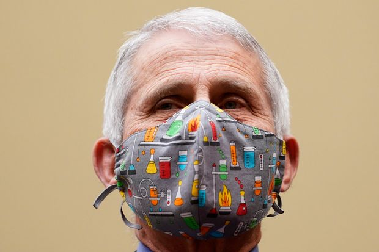 |
| 2021-04-15 18:32:00 | World | Canada Can Keep Returning Asylum Seekers to U.S., Court Rules | Decision reverses a lower-court ruling and sets up possible challenge in Supreme Court of Canada | A Canadian court ruled that asylum seekers arriving in Canada at official border crossings can be turned back to the U.S., reversing an earlier decision that found the practice to be in violation of Canadian law. Thursday’s ruling has broad implications for both the U.S. and Canada in how officials will handle those who approach the Canadian border through the U.S. and are from third countries, such as the wave of asylum seekers from Haiti and Nigeria that entered Canada over land in 2017 and 2018. Under a 2020 ruling, which had not yet come into effect, Canada would have been obligated to let those individuals enter at official border crossings, where they would have had an opportunity to file their asylum claims in Canada. The latest decision means Canada can continue to return asylum seekers to the U.S. The appeals court said last year’s decision was flawed because there wasn’t enough evidence in a case that had constitutional repercussions. The lower court, it said, leaned too heavily on anecdotes, select evidence and media reports. Human rights and refugee groups had argued Canada was violating asylum seekers’ rights by returning them to the U.S., where they faced imprisonment and the possibility of being deported to their home country—an action that might put their safety at risk. |
|
| 2021-04-15 18:28:00 | Politics | House Passes Paycheck Fairness Act Aimed at Closing Gender Pay Gap | Women’s wages have plateaued relative to men’s earnings in the past decade, says the Labor Department | House lawmakers approved legislation that would seek to narrow the gender-wage gap, a disparity that received increased attention a year after the coronavirus pandemic caused women to disproportionately lose their jobs. The Paycheck Fairness Act would increase penalties for violations of a federal law that already prohibits wage discrimination on the basis of sex, enhance prohibitions to prevent retaliation against workers who lodge a discrimination complaint and bans contracts that block employees from sharing their salaries. The legislation passed 217-210 over the objections of many Republicans, who argue that the law would lead to a flurry of spurious lawsuits from employees seeking higher pay. The bill faces headwinds in the evenly divided Senate, where Republicans have previously blocked similar legislation. One Republican joined Democrats Thursday to vote in favor of the bill. Women’s earnings as a share of men’s pay has largely plateaued in the past decade, after years of narrowing. Last year, the median weekly earnings for a woman working full time was 82.4% that of a similar man, according to an analysis of Labor Department data. The gap is little changed since touching its narrowest point in 2014. In addition to a persistent earnings disparity, women suffered more job loss than men during the economic downturn caused by the coronavirus pandemic, losing 13.4 million jobs in March and April 2020, versus 12 million for men, according to the Labor Department. Women disproportionately held in-person service jobs at restaurants, hotels and certain retail stores, that were shed when swaths of the economy were closed last spring. |
 |
| 2021-04-15 18:27:00 | Opinion | Ponzi’s Foundation for Madoff’s Pyramid | Courts used 20th-century precedents to resolve claims over a 21st-century swindle. | Bernie Madoff, who died Wednesday at 82, is inevitably remembered for running the biggest Ponzi scheme in history. Which makes his death a reminder of the life of Charles Ponzi (1882-1949). Beginning in 1919, Ponzi, a Boston resident, offered to pay investors, within 45 days, $150 for every $100 they lent him. The immigrant from northern Italy credited this spectacular promised return on investment to arbitrage in international postal coupons. These were vouchers that could be enclosed with international letters. The recipient would redeem the voucher for his own country’s stamps and affix them to a reply. Ponzi told would-be lenders that differences in international exchange rates enabled him to buy and sell the coupons and make a hefty profit. You know how this ended. But while Ponzi didn’t make an honest return, he did help to make law. His name became not only an eponym but a Supreme Court case, and the aftermath of his scam led to a second ruling by the justices. In 1921, Ponzi was in federal prison in Massachusetts serving a five-year sentence after pleading guilty to mail fraud. A state court in Suffolk County directed that he be brought before it to stand trial for larceny. Ponzi objected, maintaining that as long as he was in federal custody, the court lacked jurisdiction to prosecute him on state charges. |
|
| 2021-04-15 18:26:00 | Opinion | Can Pope Francis Head Off a Schism? | He should say no to demands by German bishops to embrace modern mores. | The Protestant Reformation began in Germany some 500 years ago before spreading across the Western world. Today, Germany’s Catholic bishops are taking steps that could again rattle the foundations of the world’s largest church. They are moving to tear down the Catholic Church’s teaching on human sexuality, priestly celibacy and other morally and politically charged issues. Without direct and immediate intervention by Pope Francis, the church could be headed for another schism. Since 2019, German bishops have been pursuing a “synod,” or council, on matters of great theological importance. It is a response to the German church’s many challenges, which include plummeting membership and a sexual-abuse scandal. Many other countries are facing a similar crisis, and surviving it is no small task. Yet the German bishops have chosen not to focus on cleaning their own house and spreading the saving message of Jesus Christ. Instead, they’re trying to build trust with their fellow citizens by breaking with the faith in favor of modern cultural norms. The bishops have made their intentions clear since the synod process began in 2019, with a promise of “newly assessing” church teaching on homosexuality and sexual morality more broadly. While the Covid-19 pandemic has delayed the synod, its “Fundamental Text” hints at the most radical departure from Catholic teaching yet. Approved in December, the document speaks of dissatisfaction with the church’s “power structures” and “positions” on “sexual orientation” and “gender justice.” It also calls for a discussion of priestly celibacy. As the synod enters its latter stages, the bishops will debate these topics and issue decisions, which the local hierarchy has said will be “binding.” The Vatican is aware of what’s at stake. In 2019 the head of the Congregation of Bishops sent a letter to the German bishops’ conference declaring that the proposed synod is “not ecclesiologically valid,” making it illegal and immoral in the eyes of the Catholic Church. The letter specifically noted the involvement of individuals and groups opposed to Catholic teaching, as well as the bishops’ stated intention to enact binding theological changes. The German bishops voted to move forward with the synod anyway. |
|
| 2021-04-15 18:26:00 | Books | ‘2034’ Review: Navigating a Disaster | A work of fiction, co-authored by a retired Navy admiral, that envisions a catastrophic showdown in the South China Sea. | The year is 2034. Mike Pence has recently concluded a single-term presidency, and his successor is a woman. Not only that, for the first time a new American leader has risen to the office as an independent. If much has changed in the world, there is plenty of continuity, too, nowhere more so than in American friction with a familiar set of adversaries: Iran, Russia and, above all, China. Following a trend that began late in the presidency of Barack Obama, Beijing has been building up its navy and ratcheting up efforts to force the United States to withdraw from the western Pacific, especially from the South China Sea, which China claims as its own. American power is in decline, but the U.S. is determined to uphold its right to sail naval vessels in that vast body of water. One day early in Elliot Ackerman and Adm. James Stavridis’s “2034: A Novel of the Next World War,” Commodore Sarah Hunt, as she leads a flotilla of American warships through the South China Sea aboard the USS John Paul Jones, is left to muse about the point of it all. The exercise is officially known as a “freedom of navigation patrol.” But proceeding 12 nautical miles off a Chinese-controlled islet appropriately named Mischief Reef, Hunt thinks otherwise, concluding that her mission is in reality a deliberate provocation: “Passing through the much-disputed [Spratly Islands] with her flotilla was the legal equivalent of driving donuts into your neighbor’s prized front lawn after he moves his fence a little too far onto your property. And the Chinese had been doing that for decades now, moving the fence a little further, a little further, and a little further still, until they would claim the entire South Pacific.” It is hard to write in great detail about what ensues in this novel without giving away the drama of its denouement. Suffice it to say that there is conflict and catastrophe on a large scale, and it unfolds, as major conflicts tend to, with surprising twists and turns. It is not spoiling things to note that if there is no outright winner between the two biggest antagonists, the U.S. and China. America comes out of the confrontation badly wounded and very much humbled, with its status in the world starkly lowered from the familiar heights of the postwar era. The strengths of the novel are anything but incidental to the background of one of its authors, Adm. Stavridis, a former destroyer and carrier strike group commander who retired from the Navy in 2013 as NATO Supreme Allied Commander in Europe. He and Mr. Ackerman have written what in many ways is a traditional potboiler, one that proceeds with the swiftness and lack of deep character development that marks much airport fiction. But Adm. Stavridis not only understands how naval fleets work; he has clearly given a great deal of thought to America’s biggest strategic risks, and at the top of the list is war with China, which, as this book seems designed to point out, could occur quite by accident and at almost any time. |
|
| 2021-04-15 18:20:00 | Politics | Lawmakers Look Into Bipartisan Compromise on Infrastructure | Some Republicans want to make a less-expensive GOP counterproposal to Biden’s plan, while others are hoping for a deal with Democrats | WASHINGTON—Lawmakers began feeling out the possibility of reaching a compromise on an infrastructure package, as a bipartisan group held a call Thursday to discuss the issue and some Republicans began working on an alternative to President Biden’s $2.3 trillion plan. The virtual meeting Thursday involved a group of roughly 20 lawmakers in both parties who helped kickstart negotiations on a roughly $900 billion coronavirus aid package late last year. It follows a series of meetings the White House has held with members of both parties on infrastructure, including one on Monday, when Mr. Biden indicated he was open to negotiation on the details of his proposal. The White House is seeking to spend hundreds of billions on transportation infrastructure and expand broadband access, as well as other priorities like manufacturing and fixing school buildings, while raising taxes on corporations to cover the bill’s cost. The bipartisan meeting on Thursday was largely a preliminary discussion of where lawmakers could find common ground, according to Sen. John Hickenlooper (D., Colo.), one of the attendees. “At this point, we didn’t get anything done—we’re so preliminary, we really don’t know what the numbers are, so everyone’s going to look at what they’ve got over the weekend,” he said. |
|
| 2021-04-15 17:56:00 | Business | CBS to Combine News and TV Stations Divisions | Neeraj Khemlani and Wendy McMahon will share responsibility for the broadcast news division and CBS’s television stations | ViacomCBS Inc. said it would combine the journalistic and business operations of CBS News and CBS Television Stations into one division, and appointed two executives to lead the new unit. Neeraj Khemlani, an executive at Hearst Corp., and Wendy McMahon, the former president of Walt Disney Co. ’s ABC-owned television stations, will share responsibility for CBS News and CBS Television Stations as co-heads and presidents, CBS parent ViacomCBS said Thursday. The appointments fill a leadership void left by ViacomCBS executives that have already departed and are looking to depart. Susan Zirinsky, the president of CBS News, is in negotiations for a deal that would keep her at ViacomCBS as a producer. CBS said earlier this month that Peter Dunn and David Friend, executives at CBS Television Stations, were leaving the company amid an investigation into allegations reported by the Los Angeles Times that the two had fostered a hostile work environment at the TV-station group. Attorneys for the men have denied allegations of misconduct. In a memo to staff, CBS Entertainment Group Chief Executive George Cheeks said combining the station group and news would “maximize the power of our newsgathering and production operations to serve audiences across all national, digital, local and global platforms.” |
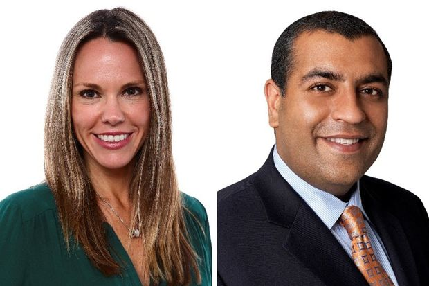 |
| 2021-04-15 17:49:00 | Books | Bestselling Books Week Ended April 10 | With data from NPD BookScan | ||
| 2021-04-15 17:43:00 | Politics | Intelligence Was Limited That Russia Offered Bounties on U.S. Troops, White House Says | Administration assigns ‘low to moderate’ confidence in intelligence behind explosive reports | WASHINGTON—The White House on Thursday said it didn’t have solid intelligence that Russia had offered bounties to Afghan militants to kill U.S. troops, reports that last summer shook up U.S.-Russia relations, increased tensions between the U.S. and the Taliban during a troop drawdown and prompted bipartisan condemnation over the Trump administration’s inaction. On Thursday, the Biden White House said U.S. intelligence had only “low to moderate confidence” in the reports of the alleged bounty program. The administration expressly declined to link the latest sanctions and expulsions of Russian diplomats undertaken Thursday to the bounty reports. But in listing the bounties as a point of tension with Russia alongside the SolarWinds hack of government and corporate computer systems and interference in elections—actions U.S. intelligence attributes to Moscow—the administration aimed to put Moscow on notice and to protect U.S. troops remaining in Afghanistan until the withdrawal is complete in September. “Our focus is on sending a clear message to Russia about the steps the United States would take in response to such behavior were it to continue,” a senior administration official said Thursday. The official added, “This information puts a burden on the Russian government to explain its actions and take steps to address this disturbing pattern of behavior.” |
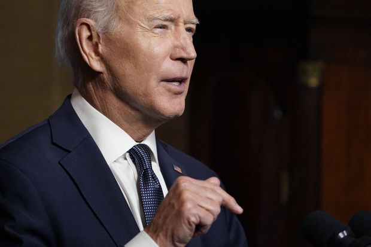 |
| 2021-04-15 17:35:00 | U.S. | Adam Toledo Video Shows 13-Year-Old Boy Fatally Shot by Chicago Police | Officials call for calm as body cam video shows the teenager’s final moments | CHICAGO—City leaders urged calm after officials released video Thursday of Chicago police fatally shooting 13-year-old Adam Toledo, as he turned to surrender after a foot chase in an alley at the end of March. Police said an officer killed the teenager in the early morning hours of March 29, as police responded to a ShotSpotter alert of shots fired in the area. The killing set off protests and demonstrations in the predominantly Hispanic neighborhood of Little Village. The officer involved hasn’t been named and has been placed on administrative leave. The Civilian Office of Police Accountability, which is investigating, released the video in consultation with the city and the boy’s family. It shows an officer chase someone down an alley and yell repeatedly for the boy to stop. As he did so, the officer yelled, “Show me your f— hands.” The boy turned toward the officer with arms raised and nothing in his hands. The officer yelled, “Drop it, drop it,” and immediately fired a single shot before rushing over. |
|
| 2021-04-15 17:18:00 | Politics | Democratic Lawmakers Air Differences on Overhauling Supreme Court | Pelosi backs Biden’s deliberative approach after progressives introduce bill to expand the court | 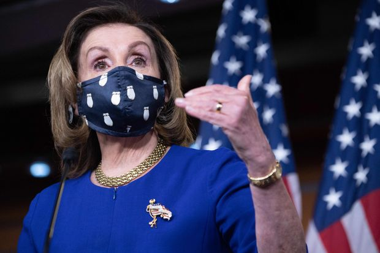 | |
| 2021-04-15 17:16:00 | Markets | Massachusetts Seeks Revocation of Robinhood’s Registration | Filing by regulators comes as popular broker-dealer levels complaint against state | Massachusetts securities regulators on Thursday asked that Robinhood Market Inc.’s registration as a broker-dealer in the state be revoked to prevent the popular online brokerage from doing business there. The regulators said Robinhood has “continued a pattern of aggressively inducing and enticing trading among its customers,’’ in a follow-up filing to a complaint filed by the state against the company in December. The state pointed to recent decisions by Robinhood, including its promotion giving customers cash rewards based on new deposits, as demonstrative of “a firm culture which has not changed” after the filing of the December complaint. It added that Robinhood’s actions pose “a substantial and continued risk to Massachusetts investors.” In a response, Robinhood said Thursday in a blog post that “the complaint reflects the old way of thinking: That new, younger, and more diverse investors don’t have a place in the markets.” “By trying to block Robinhood, the division is attempting to bring its residents back in time and reinstate the financial barriers that Robinhood was founded to break down,” the company said. |
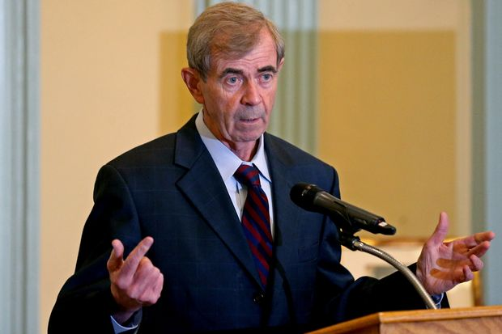 |
| 2021-04-15 17:11:00 | Television Review | ‘Mare of Easttown’ Review: All Gone but Not Forgotten | In an HBO drama, Kate Winslet stars as a small-town detective haunted by her tragic past and the unsolved disappearance of a local girl. | The title of this sterling drama set in a small Pennsylvania town is a clear sign of things to come. “Mare of Easttown” (begins Sunday, 10 p.m., HBO) is, namely, a seven-part series whose powers derive as much from its enthralling focus on that town and its society as from the unsteady life and career of its heroine, known simply as Mare, a police detective born and raised there. Kate Winslet’s eloquent command of the role is obvious from the outset. Our first look at Mare shows her jarred awake from a deep sleep in the early morning by an elderly citizen who thinks she’s seen a prowler. But the detective isn’t upset, and she is patient with the woman. She’s at home in this world she’s known all her life. She’s also divorced, and her self-esteem hasn’t been advanced by learning that her former husband has found a new woman to make him happy and is about to marry her. Furthermore, her mind is on the job she holds and the torments that go with it. The case of a young woman from Easttown who has been missing for a year haunts her, and it doesn’t help that the girl’s anguished mother has taken to public denunciations of the police department and particularly Mare for their failure to find her. There is, in addition, the weight of the past, which includes never-ending thoughts about Mare’s son, who took his own life. For all that, she has a life of her own—one she shares with her entertainingly dour mother, Helen (a delectable Jean Smart); her teenage daughter, Siobhan (Angourie Rice); and not least with her beloved 4-year-old grandson, child of the son who took his own life. She has a circle of friends, including the sister of one of the criminals she chased down. She’s the kind of detective who threatens the utility company with action if it doesn’t turn the heat back on in the freezing houses of people she’s come to know in her line of work. For all the worries that pursue her, the memories that haunt her, she manages to live that life with gusto. In this she’s like everyone else in Easttown, a world of people with troubles. The atmosphere of crisis is pervasive—people suffer, they drink, they rant—and it’s a testament to the writing (Brad Ingelsby wrote the script) that no moment in this saga ever feels even remotely unreal. The first episode alone delivers a generous taste of the bottomless rage that comes spewing forth from new husbands, furious that they have to foot expenses for children who have come with the marriage—even things like diapers. Or, as in the case of a father who has found a new love life, outrage at being confronted by the mother of his child seeking help from him to pay for his son’s necessary ear operation. The battling isn’t always about money, either. Among the younger set, text messaging a former boyfriend can, if it falls into the wrong hands—i.e., the ex-boyfriend’s new partner—result in death threats. Yet, there’s also neighborly kindness, life goes on, and there are celebrations. One of them, in which Mare plays a significant role, is the gala held in honor of the 25th anniversary of the high-school basketball championship—a victory in which Mare played a leading part. On this night, despite a limp resulting from a fall while chasing a suspect, she’s looking seriously glamorous. Enough to win the attention of a man new to the town—a novelist (Guy Pearce) who has a job as writer-in-residence at a nearby college. |
|
| 2021-04-15 17:10:00 | Film Review | ‘Vanquish’ Review: Mother With a Body Count | Morgan Freeman and Ruby Rose co-star as a crooked ex-cop and the assassin he blackmails into carrying out his hits. | Morgan Freeman has played a character in a wheelchair before—in “The Magic of Belle Isle,” a Rob Reiner schmaltz-fest about a cantankerous writer redeemed by Virginia Madsen’s single mother. “Vanquish” is not that movie. It is, however, a lot of other movies: “La Femme Nikita,” “Hanna,” “Anna,” “Salt”—any number of action-adventure thrillers with an invincible female operative who is entrapped in a malevolent system, exploited by her allies and underestimated by her enemies. Which is the fun part. “I hear you’ve killed more people than Quentin Tarantino,” says one cocky evildoer, unaware that he’s about to join the roll of the dead as written by the unstoppable Victoria (Ruby Rose). It’s either a pretty good line, or “Vanquish” has already lowered my standards. Ms. Rose, an Australian attraction whose CV includes model, VJ, boxer, television host and recording artist, may also be an actress (she starred as Batwoman in the CW series) though it would be unfair to judge by “Vanquish”: The script by director George Gallo and Samuel Bartlett fails to provide her the wherewithal to make her character recognizably human. Victoria is a former Russian drug courier who has left the business because of her daughter, Lily (Juju Journey Brener), but when Mr. Freeman’s Damon Hickey abducts the girl in order to dragoon Victoria back into being his lethal bagman (or bagperson) she seems to forget she has a daughter at all, preferring to administer instant justice and make wisecracks worthy of ’80s Arnold Schwarzenegger movies. She also leaves a trail of carbon monoxide around town, as she motorcycles from appointment to appointment, and we watch what we’ve already seen being replayed inside her mind, amid an excess of visual style that attempts to but doesn’t quite compensate for the thinness of the story. Most of the filming, by the way, was done in Biloxi, Miss., although viewers might, understandably, guess Canada: One group of gangsters on Victoria’s collection route are actually watching prime-time curling on their flat-screen TVs. We don’t know a lot about Victoria—her brother, who’d been her partner in crime, is dead; his killer, almost by happenstance, will be among Victoria’s adversaries. Damon, however, gets the full treatment: Over the opening credits, through a variety of headlines and newscasts, we learn he was a hero cop, the “country’s police commissioner,” who was left paraplegic by an assassination attempt—presumably in retribution for some act of public service. Once you get a look at the ex-cop’s house you realize he’d been dirty for some time. And he’s not alone: When he goes to confession, the priest on the other side of the screen reports how much their operation has taken in that month, from various vices around the city. It’s a gratuitous slap at the Catholic Church, especially since the priest is never heard from again. But the implication is that the corruption is widespread, and the man in charge of it all is Damon. |
|
| 2021-04-15 17:08:00 | Television Review | ‘Secrets of the Whales’ Review: Dispatches From the Deep | Narrated by Sigourney Weaver, a Disney+ series offers an intimate view of these majestic creatures. | The first thing to know about “Secrets of the Whales” (Thursday, April 22, Disney+) is that it takes just a single glance at the opening scene—a member of the orca family pivoting about in the ocean—to feel you’ve been transported to paradise. The kind, that is, open to people who know enough, after a pandemic and a year of no travel, to tune into a film on whale life in 24 different locations in the world. People, moreover, not likely to become deranged by hearing, repeatedly, a narrative voice say that whales are just like us. The four parts of this spectacular series—executive produced by James Cameron and narrated by Sigourney Weaver—are titled “Orca Dynasty,” “Humpback Song,” “Beluga Kingdom” and “Ocean Giants (Sperm Whale).” The show’s impact has, needless to say, everything to do with Brian Skerry’s impossibly intimate photography of these creatures: pictures of whales whirling around in their pods—hunting, playing, racing, devouring sting rays and other choice food items. In Norway, 200 miles above the Arctic Circle, more herring, we learn, passes through the fjords than there are people in the world. The job of the orca whales here is to herd the herring into a ball—no easy trick. But the team leader in charge of food has figured the problem out. One way is to flash her large white belly, which frightens the fish. Then the matriarch in charge has only to slap the fish with her tail—which knocks them out. One of the most striking sights in the film’s travels are the elephant seals, an important food source for orcas. The intimate pictures of these residents of the Falkland Islands seem miraculously to leave no detail of their look concealed. An alpha seal, the film reports, can weigh more than a pickup truck. One of the most heartening images is the sight of a National Geographic photographer who, seeing a whale trapped by fishing lines and in grave danger of losing its life, bravely swims up close with a knife and cuts the ropes. |
|
| 2021-04-15 17:07:00 | Film Review | ‘Monday’ Review: Dancing Around Happiness | After two Americans, played by Sebastian Stan and Denise Gough, meet in a Greek club, they see if a serious relationship can live up to their electric chance encounter. | There really is a Monday in “Monday,” one that provides a muffled cymbal crash of irony, comedy and incipient tragedy at the end of a film in which every other day has been Friday—it’s said so on the screen, in big letters. It’s the metaphoric Monday, however—the school day, the workday, the due date for payment on a misspent weekend—that haunts the proceedings. You know it’s coming and yet, for all the foreshadowing, it’s impossible to resist the romantic/delirious vortex in which the movie’s besotted lovers find themselves aswirl, as if in a stormy, wine-dark sea. Directed by Argyris Papadimitropoulos, this Greek-American-British production stars Sebastian Stan, best known for his Winter Soldier roles (including Marvel’s current series “The Falcon and the Winter Soldier”), and Denise Gough, best known now for her roles at the National Theatre in London. That seems likely to change: She’s a revelation in “Monday,” a pirate of the heart, playing the character who wins the bulk of our sympathy and supplies the abundant sexiness to the director’s erotically calibrated non-sex scenes. Yes, Mr. Stan acquits himself quite well, as Mickey, the itinerant DJ, jingle composer and American ex-pat who’s been in Greece for seven years and can’t explain why. But it is Ms. Gough’s Chloe who is the object of sustained fascination, who is heroic in her way and, as we will discern, maybe a little crazy. “Monday” launches itself in the late hours of an Athens dance club—filmmakers love dance clubs—where Chloe meets Mickey and lust burns so hot everyone knows it has to burn out. Caution, however, is tossed to the Aegean wind and the couple awakens the next day naked on a beach, surrounded by scolding mothers, children and police—who are remarkably sympathetic though, of course, disapproving. (As one not-quite-English-fluent officer instructs them, “Beach, clothes; home, no clothes.”) Chloe, an immigration lawyer, has a new job in Chicago but will never show up for it, as we learn in a flashforward to yet another Friday. What differentiates the “European” from the “American” movie is always a meaty topic for cocktail-party conversation, especially one that needn’t come to a tidy conclusion. It’s easy to think about the differences while watching “Monday,” because “Monday” is unthinkable as an American film—particularly because its theme is romance and the near-impossibility of love sustained. In the American rom-com—the only species that exists, really—the universe is ideal and things can only get worse. In a film like “Monday,” things going right is the miracle. And a transient one at that. |
|
| 2021-04-15 16:52:00 | Fed’s Daly Says Frequency of Fed Market Interventions Is Concerning | The San Francisco Fed leader says the central bank should be the last, not first, line of defense for stressed markets | Federal Reserve Bank of San Francisco President Mary Daly is worried that unresolved financial system weaknesses are drawing the U.S. central bank in with emergency support offerings too often. “The frequency and scale of our interventions is concerning,” Ms. Daly said during a virtual appearance Thursday. “Without changes to our financial infrastructure, the Federal Reserve may regularly be called to step in to stabilize markets during turbulent periods,” she said, adding, “and not just for 100-year floods like Covid-19,... |
||
| 2021-04-15 16:48:00 | World | U.S., Iranian Nuclear Negotiators Look for Ways to Untie Sanctions Knot | Vienna talks seek to plot course to economic relief in exchange for return to atomic limits | VIENNA—Negotiators for the U.S. and Iran, working to revive an international deal aimed at restricting Tehran’s atomic ambitions, are looking for ways to untangle a knot of interlocking American sanctions in exchange for Tehran’s return to limits on its nuclear activities. After former President Trump pulled out of the agreement in 2018, saying it didn’t go far enough, Washington reimposed sanctions lifted under the deal and imposed a raft of new ones. Some are related to Iran’s nuclear program; others target alleged human-rights abuses and terrorism as well as Tehran’s work on ballistic missiles. In response, Iran began to roll back limits on uranium enrichment and other activities that were part of the 2015 accord, formally known as the Joint Comprehensive Plan of Action, or JCPOA. Diplomats are trying to chart a course toward lifting of sanctions that have battered the Iranian economy with commensurate steps from Iran’s side. Iranian officials have said they want all the Trump-era sanctions removed before it returns to complying with the nuclear deal. “Anything imposed by the Trump administration should be lifted,” before Iran makes any concessions, Iranian chief nuclear negotiator Abbas Araghchi said in an interview last week. |
|
| 2021-04-15 16:40:00 | Life & Arts | The Tragedy of Vandalizing the Past | The 20th anniversary of the destruction of the Bamiyan Buddhas in Afghanistan reminds us of the imperative of historical preservation | ||
| 2021-04-15 16:25:00 | Life & Arts | Hosting a Dinner? Try Matching Your Dress to Your Plates | After a year of isolation, entertaining at home is finally possible, and some women are rising to the occasion by matching their outfits to their table settings. Brands like Off-White and La DoubleJ are zealously catering to the trend. | LAST FALL, when hosting Rosh Hashana dinner at her farmhouse in South Delhi, India, Cecile D’Ascoli wore a patterned cerulean silk dress. The look was from the eponymous line of womenswear and home linens that Ms. D’Ascoli owns with her husband, designer Peter D’Ascoli, and it elegantly complemented the print placemats, tablecloth and napkins—wares from a recent collaboration with Casa Cabana—that she used for the occasion. Like the dress, these jewel-toned tabletop accessories were inspired by caravan trade routes of the Eurasian Steppe. “It came from the same inspiration but was a different design so it worked perfectly,” said Ms. D’Ascoli of her High-Holidays ensemble. D’Ascoli, which is based in Faridabad, India, is one of a raft of fashion brands offering suites of homeware, and particularly tableware, that are not only analogous to their ready-to-wear options but in many cases feature the same prints and colors. This trend—we’ll call it “table dressing”—has been percolating for several years, with e-commerce hubs such as MatchesFashion and Moda Operandi investing increasingly in homewares that parallel their fashion offerings. However, a year that most of us spent at home—glued to social media—accelerated table dressing’s popularity. “The trend of photographing yourself with your table…is a highly curated affair,” said Peter D’Ascoli. For evidence, just turn to Instagram. Paula Sutton (@hillhousevintage), who posts stylized bucolic scenes from her Norfolk, England, cottage, has matched her pink gingham LoveShackFancy frock with the marigold checks of her ruffled tablecloth. And earlier this spring, Cambridgeshire, England-based influencer Alice Naylor-Leyland shared a photo in which her silky blue column dress echoed the shades of her table’s hydrangea bouquets and patterned plates. As rising temperatures and vaccination numbers make the prospect of hosting small gatherings a reality, table dressing’s IRL appeal continues to grow. The scope for synchronization is expanding, too. You can pair Edie Parker’s vermilion acrylic coasters with the brand’s Cherry Bomb earrings; set the table with La DoubleJ’s pineapple-motif plates while wearing the line’s parallel-print crepe de chine swing dress; or coordinate Off-White’s arrow-logo-emblazoned bomber with its logo-patterned table runner. For her part, Ms. D’Ascoli advises table-dressing novices to avoid precise matching and aim for more nuanced dialogue between prints. “I would never wear the same dress as my tablecloth,” said Ms. D’Ascoli. “I prefer to coordinate, but not match.” |
|
| 2021-04-15 16:16:00 | Tech | AppLovin Shares Fall 19% in Market Debut | CEO says the business is ‘quite profitable from a cash perspective’ after raising $1.8 billion in IPO | ||
| 2021-04-15 16:16:00 | Markets | SoftBank Infusion Meant to Pay Back Credit Suisse Investors Went to Greensill Bank | That $440 million took a detour, complicating Credit Suisse’s efforts to recover money owed to investors after Greensill collapsed into bankruptcy | When SoftBank Group Corp. made a last ditch-infusion of $440 million into Greensill Capital last November, the money was earmarked to pay off investors in Credit Suisse Group AG investment funds, according to people familiar with the deal. But the cash never made it to the Swiss bank. Greensill put the money into its own German banking unit instead, according to a report released Thursday from the bankruptcy administrators for Greensill’s Australian parent company and some of the people familiar with the deal. That detour is complicating Credit Suisse’s efforts to recover money owed to investors after Greensill collapsed into bankruptcy last month, according to people familiar with the matter. Credit Suisse this week identified $2.3 billion in problematic loans in funds it ran with Greensill, including the $440 million loan. The incident shows the challenge in unraveling Greensill’s complicated web of transactions and how Greensill moved funds around to plug holes in its operations, according to the people familiar with the matter. |
|
| 2021-04-15 16:15:00 | Markets | U.S. Treasury Yields Fell Sharply | Yields’ biggest one-day drop since November reflects renewed demand for government debt after sustained selling in first quarter | U.S. Treasury yields registered their biggest one-day decline since early November on Thursday, reflecting renewed demand for government debt after sustained selling in the first quarter. The yield on the benchmark 10-year U.S. Treasury note settled at 1.531%, according to Tradeweb, compared with 1.637% on Wednesday. Yields, which fall when bond prices rise, edged lower overnight before dropping sharply near the start of U.S. trading, and continued their slide throughout much of the session. That came despite a strong retail sales report that might normally be expected to push yields higher since they tend to rise when the economic outlook improves. Debt investors, though, have shrugged off good economic data in recent days as much as they ignored some weak data over the winter. Instead, higher yields have lured buyers, apparently aided by technical factors such as renewed demand from Japanese investors. Banks and insurers in Japan had contributed to a wave of global selling in February, according to investors and analysts, prompted by efforts to finalize their investment returns for the financial year that ended on March 31. Now, there is evidence that they are buying again, with new government data showing that Japanese investors bought the equivalent of $15.6 billion of overseas bonds on net last week, the most since November. |
|
| 2021-04-15 15:09:00 | Opinion | The Misguided Philosophy of Tax and Spend | Middle-class families earning well below $400,000 will share with the wealthy the burden of Biden’s spending binge—‘tax-free.’ | President Biden has promised not to raise taxes on “anyone” (presumably any family) earning less than $400,000 a year. But I thank Kevin Hassett (“The Biden Plan for Economic Sclerosis,” op-ed, April 9) for exposing how we all will pay for the president’s spending binge, well beyond what’s needed for pandemic relief or infrastructure. Mr. Hassett states, “Democrats have never cared about paying for the trillions in pandemic-relief spending,” confident that “taxes aren’t necessary to finance spending when government can print money.” Each new dollar demotes the buying power of every existing dollar, whether as income or retirement savings. Thus, without even increasing taxes per se, Mr. Biden can in effect tax all families. Governments cannot create wealth; they can only redistribute it. Middle-class families earning well below $400,000 will share with the wealthy the burden of Mr. Biden’s spending binge—“tax-free.” Phil Barnes San Pedro, Calif. |
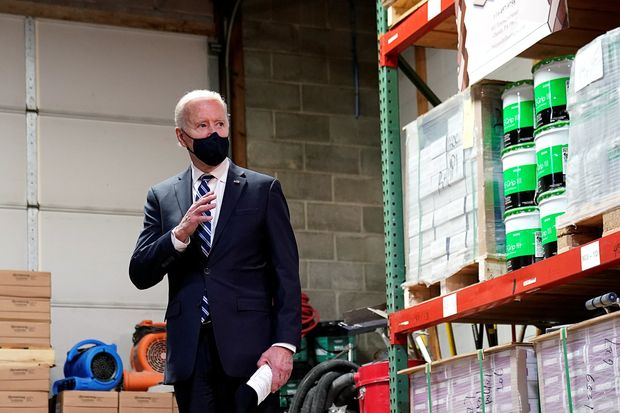 |
| 2021-04-15 15:07:00 | Opinion | Red Sox Whiff on Race-Heavy School Reform | Boston didn’t win the World Series by mandating diversity. | Fortunately for Red Sox fans, their World Series–winning rosters didn’t reflect the demographics of Boston (“The Red Sox Speak Up for Racial Engineering in Boston Schools,” op-ed, April 9). The team’s excellence wasn’t the result of mandated diversity. On the contrary, the diversity was the result of meritocracy—of making excellence the priority. That blacks, Latinos and Asians were prominent on these teams reflects their talent for, and interest in, baseball. And the underrepresentation of Jews and Narragansetts on those rosters shouldn’t suggest discrimination against them. In any institution and endeavor, all should have equal opportunity to excel—but as individuals, not as subjects of “racial engineering.” Stanley Spatz Hollywood, Fla. Mr. Stoll fails to mention one consequence of the new “ZIP Code quotas”: As minority families move out of poor neighborhoods and into better ones, they will find that their kids’ chances of enrolling in “exam schools” fall precipitously. In essence, they will be punished for striving for a better life. |
|
| 2021-04-15 15:05:00 | Opinion | Mexican Businessman’s Holding Company Responds | We disagree with the portrayal of Grupo Fertinal. | “How Obscure Fertilizer Deal Enriched a Mexican Tycoon” (Page One, April 9) presents long-known, previously published elements. It rehashes a large series of disjointed events, attacking Ricardo Salinas Pliego’s reputation and his relationship with Mexican President Andrés Manuel López Obrador. We disagree with the portrayal of Grupo Fertinal as an “obscure manufacturer”; at the time of its sale it was a competitive and productive company, with exports to over 25 countries, global quality certifications and strong growth prospects. What happened next with Fertinal’s operations is the responsibility of its buyers, who laid off qualified personnel and dismantled its structure, putting an end to a growing business and condemning it to failure. Luciano Pascoe Grupo Salinas Mexico City |
|
| 2021-04-15 14:35:00 | Politics | Capitol Police Needed to Be Better Armed for Riot on Jan. 6, Watchdog Says | Force’s inspector general cites poor preparation, inadequate intelligence for failure to control mob that stormed legislature | WASHINGTON—The inspector general of the Capitol Police told lawmakers that a police leader’s decision not to make more powerful weapons available to the force could have hampered its response during the deadly Jan. 6 riot at the Capitol. “It certainly would have provided the department a better posture to repel these attacks,” Michael Bolton said at a hearing Thursday before the House Administration Committee. Mr. Bolton appeared before the committee after he released an internal report that found multiple instances in which law enforcement failed to incorporate previous intelligence reporting into later assessments and led the department to be underprepared to handle the riot. The report also detailed failures to use all available equipment. Five people died, including a Capitol Police officer, after a pro-Trump mob stormed the U.S. Capitol to protest a vote certifying the results of the 2020 presidential election. Mr. Bolton said the Capitol Police needed to improve its intelligence, training and operational planning capabilities and to shift its organizational mind-set. “In regards to culture change, we see that the department needs to move away from the thought process of a traditional police department and move to the posture of a protective agency,” he said. |
|
| 2021-04-15 14:33:00 | Risk & Compliance Journal | Former Braskem CEO Pleads Guilty to ‘Operation Car Wash’ Charges in U.S. | José Carlos Grubisich pleaded guilty to two counts of conspiring to violate U.S. antibribery law, which carry a possible sentence of 10 years | 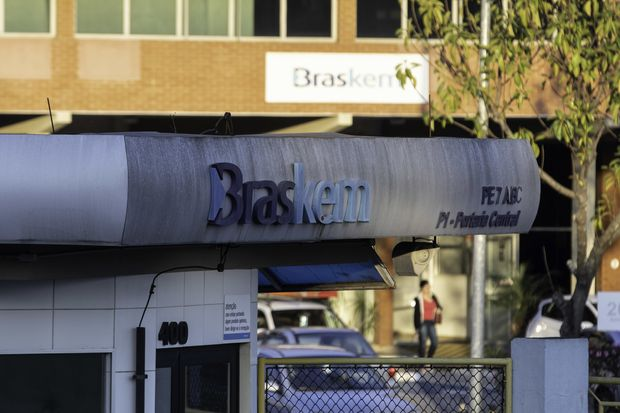 | |
| 2021-04-15 14:19:00 | Life & Arts | The Best Frozen Pizzas: Restaurant-Quality Pies to Heat and Eat | No longer a mere meal of last resort, frozen pizza now brings wood-fired flavor and artisanal ingredients home. Here, our top picks, including meaty, vegetarian and gluten-free options. | MENTION FROZEN pizza and most of us think of the utilitarian discs found in the supermarket freezer case, not wood-fired creations meticulously crafted by top pizzaioli. “If you would have told me [a year ago] I would be doing frozen pizza, I would have told you I have a bridge to sell you,” said Chris Bianco, chef-owner of Pizzeria Bianco in Phoenix, Ariz., credited with some of America’s best pies. But with his restaurants operating at half capacity during the pandemic, Mr. Bianco began supplementing earnings by freezing his celebrated pies and selling them nationally through the delivery site Goldbelly. He wasn’t the only pizza pro to pivot this way. Frozen pizza has grown beyond the usual grocery-store brands to include intriguing mail-order options. Between establishments like Pizzeria Bianco that ship restaurant-quality pies and new direct-to-consumer brands ranging in scale from micro to major, the options are diverse and enticing. The demand was certainly there. According to the market research firm Nielsen, from March through April 2020, supermarket frozen pizza sales jumped 63.2% from the previous year. The appeal to consumers is obvious: Frozen pizza is quick, it’s easy and it can appease even the most finicky palate. When you’re cooking nearly every meal at home, those are all major wins. In addition to being decidedly delicious, the frozen pizzas recommended below have a few other things in common. All were shipped in insulated packs with dry ice and arrived frozen. All came with clear, simple heating directions that yielded melty cheese and appropriately crisped crusts. While most of the instructions recommend reheating the pizzas either on a baking sheet or directly on the oven rack, a grease-dripping incident smoked out this tester’s kitchen; for pizzas that are crammed with rich toppings, consider sticking with the sheet. Beyond that, these pies are pretty foolproof. Pizzeria Bianco’s Wood Fired Pizza + Sicilian Pizza four-pack ($135, including shipping) comes with three thin-crust pizzas plus a rustic rectangular Sicilian pie and lets you choose from the restaurant’s signature combinations—many of them meaty. The Wiseguy, crowned with house-smoked mozzarella, fennel sausage and roasted onions, comes with a vial of peppery Puglian olive oil to drizzle on top. The Sonny Boy (shown) marries soppressata and Gaeta olives, while the Sicilian, saturated with olive oil and topped with fontina, comes plain or with gold-standard Ezzo pepperoni. The crisp, airy crusts are crafted from organic flour, and the sauce is made from Mr. Bianco’s own Bianco DiNapoli tomatoes. Vegetarians, do not despair: There are meatless options, too. goldbelly.com |
|
| 2021-04-15 14:12:00 | CFO Journal | What CEOs, CFOs Are Saying About the Prospects of Higher Taxes | Business leaders discuss President Biden’s $2.3 trillion infrastructure plan and proposal to raise tax rate on companies | ||
| 2021-04-15 14:11:00 | World | Iran Boosts Oil Exports Amid Nuclear Deal Talks | Tehran is now producing more oil than at any time since May 2019, at the height of Trump administration pressure | Iran’s sanctioned oil production has risen to its highest level in almost two years thanks to growing Chinese imports—a development that could lessen the West’s leverage in talks over reviving a nuclear deal with Tehran. In two closely followed oil market reports released this week, OPEC and the International Energy Agency separately cited big jumps in Iranian crude production. The Islamic Republic pumped 2.3 million barrels a day in March, according to the IEA. The agency said that was its highest production level since May 2019, when the Trump administration imposed a full embargo on Iranian oil sales. The IEA said the production hike was driven by China, which boosted purchases from Tehran to 600,000 barrels a day, five times more than in the first nine months of 2020. The agency said the secretive nature of Iran’s global sales makes it difficult to track the exact amount Iran is selling. Oil traders and officials familiar with Iranian sales said they started seeing bigger orders from Chinese buyers after Joe Biden won the U.S. presidential election in November. As a candidate, Mr. Biden had pledged a return to a 2015 nuclear pact with Iran that eased sanctions. “Despite U.S. sanctions, Iran’s crude supply has been on an uptrend since late 2020, after a buying spree from China appeared to accelerate,” the IEA said this week. “Hefty purchases appear to be continuing as Washington and Tehran restarted indirect talks,” the agency said. |
|
| 2021-04-15 14:08:00 | World | Biden to Meet With South Korean President Moon Next Month | North Korea likely to be high on the agenda in first face-to-face meeting between the two leaders | SEOUL—President Biden will meet with South Korean President Moon Jae-in late next month in Washington, a spokesman for Seoul’s presidential office said, in what will be their first face-to-face meeting since the inauguration. North Korea is likely to be high on the agenda, a Seoul official said, while other topics could include climate change, cooperation on Covid-19 vaccines and teaming up to boost the supply of semiconductors amid a global shortage. A spokesman for Mr. Moon expressed hope that the summit could help advance the goal of denuclearizing the Korean Peninsula. The two sides haven’t set a firm date for the meeting, which will take place as the Biden administration pushes to shore up alliances in Asia to counter a more assertive China and a nuclear North Korea. Mr. Biden will be meeting Japanese Prime Minister Yoshihide Suga on Friday, in his first in-person meeting with a world leader since entering office. |
|
| 2021-04-15 14:03:00 | Real Estate | Kimco Realty to Buy Rival Weingarten Realty for About $3.9 Billion | Deal values Houston-based Weingarten at 11% premium to its Wednesday closing share price | Kimco Realty Corp. has agreed to acquire fellow grocery-anchored shopping-center owner Weingarten Realty Investors for nearly $3.9 billion in cash and stock as it looks to expand its presence in the rapidly growing Sunbelt region. Kimco on Thursday said it plans to pay $2.89 in cash and issue 1.408 shares for each Weingarten share. Based on Kimco’s Wednesday closing price of $19.48, the deal values Houston-based Weingarten at $30.32 a share, an 11% premium to its Wednesday closing price of $27.34. The deal gives Kimco more opportunity to increase leasing and slightly lowers its balance sheet debt, which is typically rare for mergers, said Conor Flynn, chief executive of Kimco. Kimco, based in Jericho, N.Y., said its shareholders will own roughly 71% of the combined company upon closing of the deal, slated for the second half of the year, while Weingarten shareholders will own about 29%. |
|
| 2021-04-15 13:56:00 | Life & Arts | The Many Minds of the Octopus | The weird way that the brainpower of octos is distributed among their eight arms may have much to teach us about our own brains | Psychologist Alison Gopnik explores new discoveries in the science of human nature. Read previous columns here. Cephalopods are having a moment. An octopus stars in a documentary nominated for an Academy Award (“My Octopus Teacher”). Octos, as scuba-diving philosopher Peter Godfrey Smith calls them, also play a leading role in his marvelous new book “Metazoa,” alongside a supporting cast of corals, sponges, sharks and crabs. (I like Mr. Godfrey-Smith’s plural, which avoids the tiresome debate over Latin and Greek endings). Part of the allure of the octos is that they are both very smart, probably the smartest of invertebrates, and extremely weird. The intelligence and weirdness may be connected and can perhaps teach us something about those other intelligent, weird animals we call homo sapiens. Smart birds and mammals tend to have long lives and an especially long, protected childhood. Crows and chimps put a lot of work into taking care of their helpless babies. But, sadly and strangely, the intelligent octos only live for a year and don’t really have a childhood at all. They die soon after reproducing and, like the spider heroine of “Charlotte’s Web,” don’t even live to see the next generation grow up, let alone to look after them. Smart birds and mammals also keep their neurons in one place—their brains. But octos split them up. They have over 500 million neurons altogether, about as many as dogs. But there are as many neurons altogether in their eight arms as in their heads. The arms seem able to act as independent agents, waving and wandering, exploring and sensing the world around them—even reaching out to the occasional diving philosopher or filmmaker. Mr. Godfrey-Smith’s book has a fascinating discussion of how it must feel to have this sort of split consciousness, nine selves all inhabiting the same body. |
 |
| 2021-04-15 13:31:00 | World | Prince Philip’s Funeral Guest List Trimmed by Covid-19 Concerns | Long-planned ceremony gets pandemic restrictions: no military procession, a small guest list, four-person choir | LONDON—Buckingham Palace disclosed more details of Prince Philip’s funeral on Saturday, an event long in the planning that has had to be seriously curtailed because of the Covid-19 pandemic. There will be no military procession through Windsor and the public will see the ceremonies only on television. The congregation, including Queen Elizabeth, will wear masks and the only people singing will be a four-person choir. Meanwhile, Prince Harry and Prince William won’t walk side by side during the funeral procession following tensions between the two brothers. The celebration had been planned for so long that Prince Philip, the queen’s husband, was said to quip that he had outlived many of those involved in its preparation. The Duke of Edinburgh’s coffin was measured and made decades ago. The queen’s consort, who died aged 99, even had a hand in designing the modified Land Rover that will carry his body to the chapel at Windsor Castle. But some things couldn’t be foreseen. The global pandemic cut hundreds of expected guests to just 30 to comply with U.K. Covid-19 guidelines. And an awkward split within the ranks of the House of Windsor saw the queen’s grandson Prince Harry leave as a working member of the family. Still, the funeral on Saturday afternoon will contain many of the original touches that Prince Philip requested, palace officials said Thursday. For one, there will be a heavy military influence, speaking to his own service in the Royal Navy during World War II. |
|
| 2021-04-15 12:44:00 | World | Afghanistan Braces for Renewed Conflict When America Departs | U.S. troop withdrawal will leave Kabul government to face Taliban forces alone, and many fear renewed civil war | KABUL—Afghanistan’s beleaguered government will be on its own against the Taliban once American forces withdraw in September. The strength of the insurgency, combined with internal disarray in the administration of President Ashraf Ghani, suggests Kabul could find it hard to hold out for long. U.S. Secretary of State Antony Blinken flew to Kabul to reassure Afghan leaders on Thursday that America’s “partnership is enduring,” despite President Biden’s determination to extricate the U.S. from a 20-year conflict. But many in the Afghan capital said they fear the pullout sets the stage for a renewed civil war, possibly one in which some of Afghanistan’s neighbors—India, Russia, China and Iran—will be playing a much more significant role. “We don’t know if Afghanistan will become the new Syria,” said Timor Shah Mohseni, a 48-year-old shopkeeper in central Kabul. Even before this week’s decision by Washington, tensions had been mounting within the uneasy coalition of Afghan power brokers—led by Mr. Ghani—brought together by their mutual hostility to the Taliban and now running the national government. |
|
| 2021-04-15 12:44:00 | Opinion | CEOs Lead America’s New Great Awakening | Their political activism on behalf of voting rights will help bring about a spiritual revival. | As they did recently over gun safety, immigration, climate change, social justice and the infamous bathroom bills, major business leaders have protested new voter-restriction efforts in state legislatures. I am proud to have had a role in helping trigger some of this activity. Critics have mocked such civic engagement with headlines like “Woke CEOs’ Foolhardy Bid To Shape Voting Laws” or “Woke and Weak CEOs.” This business awakening shouldn’t be ridiculed but celebrated as the rediscovery of a misunderstood pillar of America’s industrial greatness. Economist Milton Friedman, in his 1970 essay on corporate social responsibility advised: “It may well be in the long‐run interest of a corporation that is a major employer in a small community to devote resources to providing amenities to that community or to improving its government. That may make it easier to attract desirable employees, it may reduce the wage bill or lessen losses from pilferage and sabotage or have other worthwhile effects.” DuPont CEO and Business Roundtable chairman Irving Shapiro echoed the point in 1983 when he told me: “Most businessmen are sensible and rational people. They recognize that they’ve got to meet the needs of our society or they’re not going to be successful. Free enterprise is a slogan. It means different things to different people. . . . I would make the case that we must get rid of the adversary approach and simply say we have a common objective.” Ensuring social cohesion in democracy is part of a CEO’s job of managing the strategic environment. No CEO wants finger-pointing employees dealing with hostile consumers and communities—even if “wedge” issues are appealing to Republican politicians with a divide-and-conquer plan for staying in office. Speaking up is also part of the job. Henry Ford, Thomas Edison and J.P. Morgan all spoke to issues outside the shop. The 2020 Edelman Trust Barometer found that 92% of employees expect their CEO to speak out on issues of the day. Surveys have found CEOs are among the most trusted voices in society today. |
|
| 2021-04-15 12:44:00 | Opinion | Court Packing Is a Dangerous Game | Even if the size of the bench remains the same, intimidation diminishes the justices’ stature. | The intimidation game has begun. President Biden announced last Friday the formation of a commission on reforming the Supreme Court, and Democrats in the House and Senate responded on Wednesday by announcing that a bill to add four justices to the high court is forthcoming. These are dangerous developments. Even if court packing ultimately fails, the effort to intimidate the Supreme Court will have dire consequences. Progressives have long used threats to pressure the Supreme Court to back down from the Constitution. In 1906 President Theodore Roosevelt’s allies hinted that the court shouldn’t reject expansion of the Interstate Commerce Act. According to my colleague Thomas Merrill, the “implied threat” included the possibility of “stripping the Court of jurisdiction over ICC matters or creating a specialized court.” Such threats soon became standard practice. In 1909 commissioner Charles Prouty cautioned judges that if they questioned the ICC’s authority they would face popular protest that “would not stop until the Constitution itself had been so altered as to enable the people to deal properly with these public servants.” In 1912, running as the Progressive Party’s presidential nominee, Roosevelt campaigned on the recall of uncooperative judges and decisions. President Franklin D. Roosevelt went further and sought legislation to pack the Supreme Court. Progressives never had to carry out their threats to get what they wanted. All they had to do was encourage judges to consider the advantages of judicial “restraint” and “deference” to the political branches. Unnerved by the bullying, some Supreme Court justices lost their courage. By holding back from overturning popular legislation, they thought they could “save the Court.” In 2012’s NFIB v. Sebelius, Chief Justice John Roberts acknowledged the high court’s “reticence to invalidate the acts of the nation’s elected leaders.” It looked as if he took this “reticence” so far as to rewrite an unconstitutional statute, lest the court provoke progressive wrath. Yet his retreat encouraged the view that the court is open to political pressure. In flinching from their duty to follow the law, judges invite further intimidation. |
|
| 2021-04-15 12:43:00 | Markets | Americans Are Spending, Not Borrowing. That’s a Problem for Banks | A reopening economy won’t deliver the full potential benefit for banks as long as consumers are spending cash already in their accounts | The good news for banks is that consumers are flush with cash and less likely to fall behind on their debts. But this also means it will be that much longer before they need to borrow more. Banks really need loan growth to offset the effect of low interest rates and the drag of huge deposit inflows sitting in cash on their balance sheets. Many banks’ credit-card portfolios plunged during 2020 as consumers spent less and also paid down debt. In theory, the economic growth that is anticipated for this year would imply a greater use of credit by consumers and businesses to fund more activities. Spending by bank customers certainly is picking up. Bank of America said the first quarter was its highest ever for overall consumer spending. The vast bulk of that increase still is coming via debit cards, which don’t add to card-loan balances, though the first quarter did start to register growth in credit-card spending versus the comparable period in 2019. JPMorgan Chase said that even travel-and-entertainment spending was up 50% in March versus February, and Citigroup logged recovery in areas including travel and dining. And yet banks so far still aren’t forecasting much more than a tepid uptick in consumer borrowing in the near future. In fact, the impressive size of banks’ reserve releases is indicative of how strong their customers’ balance sheets are. That is good news for credit costs, but it is also suggestive of how long it will be before spending will pick up enough to send customers back to the well for more debt that will ultimately sustain banks’ earnings over time. These banks’ customers aren’t necessarily representative of the population of Americans hardest hit by the pandemic, who have a huge need for both cash and borrowing today but often don’t meet the lending standards of the biggest banks. But among its customers, Bank of America is seeing roughly only 30% of incoming stimulus money spent, with the rest sitting in accounts. U.S. Bancorp said that average card loans fell in the first quarter from the fourth in part due to “government stimulus payments used to pay down debt.” |
|
| 2021-04-15 12:41:00 | U.S. | Almost Half of Federal Cases Against Portland Rioters Have Been Dismissed | Many charged in connection with violence surrounding last year’s racial-justice protests have completed community service and won’t be tried | Federal prosecutors in Portland, Ore., have moved to dismiss almost half the cases they charged in connection with violence accompanying last year’s protests over racial injustice, as authorities grapple with how to tamp down politically motivated unrest that has arisen since then. Of 96 cases the U.S. attorney’s office in Portland filed last year charging protesters with federal crimes, including assaulting federal officers, civil disorder, and failing to obey, prosecutors have dropped 47 of them, government documents show. Ten people have pleaded guilty to related charges and two were ordered detained pending trial. None have gone to trial. The penalties levied so far against any federal defendants, most of whom were arrested in clashes around federal buildings in Portland including the courthouse, have largely consisted of community service, such as working in a food bank or encouraging people to vote. More than half of the around 30 so-called deferred resolution deals, in which prosecutors ask the court to drop cases once defendants complete volunteer work, were initiated last fall under the Trump administration, interviews and a review of cases shows. Prosecutors have continued to pursue such deals under President Biden. Senior Trump Justice Department officials had pushed prosecutors to be aggressive in bringing a full slate of federal charges, including possibly sedition and racketeering, The Wall Street Journal previously reported, but no such charges were filed. |
|
| 2021-04-15 11:49:00 | Real Estate | Elegant Picnics in an Instant—No Packing Required | Now you can commission cushy custom al fresco events for a party of two or 250 with all the plates, blankets, cushions (and even drumsticks) you need | LET’S BE HONEST, while a blanket unfurled beneath a leafy tree is the stuff of romantic movies, the DIY picnic plays out more like reality TV. “It sounds really casual,” said Jam Stewart, founder of Picnic PopUp in Nashville, “but when you actually go to do it [yourself], it can be a frustrating experience.” Now, however, a new branch of the event-planning industry that focuses on bespoke picnics is making the fairy tale possible, from bucolic tête à têtes in Portland, Ore., to afternoon teas in Houston. Last September, Manhattanites Bailey LaMarca and Stephen Zamora, whose trip to Capri was scuttled by the pandemic, booked an oceanside picnic with Destination Haus in Montauk, N.Y. The couple brought in locally made lobster rolls and chilled Wölffer Estate pinot gris. For its part, Destination Haus supplied the beachy tableaux, a nautical-pillow haven surrounded by lanterns, blue glass chargers on woven place mats and perky yellow Craspedia flowers in vases. “It was a glimmer of light in a dark year,” said Mr. Zamora, who plans to make picnicking a summer tradition and has already booked one for August. Destination Haus’s Carlyn Vellante and sister Kendra expanded their art and home-décor business into picnic planning last summer. Their mission: to give diners in the Hamptons an alternative to the humdrum experience of takeout and the excruciating waits for socially distanced outdoor seating. Business ka-boomed. The sisters planned as many as three picnics per night through October in 2020. And demand is unwavering for the 2021 season. “We’re already double-booking our dates,” said Ms. Vellante. Most setups (with cleanups) cost $100-$200 per guest and include wedding-worthy tabletop décor, enough pillows and throw rugs to make a nest, plus floral arrangements. |
|
| 2021-04-15 11:37:00 | Markets | Delta Should Keep Faith in Good Old Network Strategy | Carrier reported better-than-expected revenue in first quarter, but at the expense of profitability | Delta Air Lines has stuck doggedly to the old network-carrier playbook even as the pandemic has made a mess of it. Now is no time to change course. On Thursday, Delta said it lost $1.2 billion in the first quarter. While this is its fifth straight quarter in the red, the airline also reported a sharp improvement in March, when passenger revenue rose 50% relative to February and it finally generated cash again. The goal is to turn a profit during the third quarter, the company said. But the rebound came at the expense of profitability: Earnings were below analysts’ forecasts, and income earned per passenger-mile fell 13% from a year earlier. The risk for Delta is that the temptation of near-term cash flows undermines its previous careful maneuvering to gain a strategic edge over rivals. During the Covid-19 crisis, full-service airlines have faced a choice between aping budget carriers with point-to-point routes to whatever sunny leisure destination is popular—and unaffected by travel restrictions—or protecting their networks even if it meant flying emptier planes. American Airlines , which had the most immediate need for cash, opted for the former. At the other end of the spectrum, Delta has preferred to tolerate lower so-called load factors and spare its hubs from the largest capacity cuts. In these airports, it has gained an average of 4 percentage points of market share relative to 2019, according to Oliver Wyman’s PlaneStats. Delta is also gaining ground in its rivals’ bases, notably Los Angeles International, which is a hub shared by all three major U.S. full-service airlines. |
|
| 2021-04-15 11:30:00 | Life & Arts | What Walt Whitman Knew About Democracy | For the great American poet, the peculiar qualities of grass suggested a way to resolve the tension between the individual and the group. | When Walt Whitman began conceiving his great volume of poetry, “Leaves of Grass,” in the 1850s, American democracy was in serious danger over the issue of slavery. As we celebrate National Poetry Month this month, the problems facing our democracy are different, but Whitman still has a great deal to teach us about democratic life, because he saw that we are perpetually in danger of succumbing to two antidemocratic forces. The first is hatred between Americans, which Whitman saw erupt into civil war in 1861. The second danger lies in the hunger for kings. The European literature and culture that preceded Whitman and surrounded him when he wrote “Leaves of Grass” was largely what he called “feudal”: It revolved around the elect, the special, the few. Whitman understood human fascination with kings and aristocrats, and he sometimes tried to debunk it. But mostly he asked his readers to shift their interest away from feudalism to the beauties of democracy and the challenge of sustaining and expanding it. This challenge is what inspired him to find his central poetic image for democracy, the grass: “A child said, What is the grass? fetching it to me with full hands.” Whitman says that he can’t and won’t offer a literal answer to the question. Instead he spins into an astonishing array of “guesses.” The grass “is the flag of my disposition, out of hopeful green stuff woven”; it’s “the handkerchief of the Lord…Bearing the owner’s name somewhere in the corners, that we may see and remark and say Whose?” To Whitman, “the grass is itself a child…the produced babe of the vegetation.” “Tenderly will I use you, curling grass,” he writes. “It may be that you are from old people and from women, and from offspring taken soon out of their mothers’ laps / And here you are the mothers’ laps.” He offers one metaphor for the grass after another, and one feels that he could go on forever. But mainly Whitman’s grass signifies American equality: “I guess it is a uniform hieroglyphic,/And it means,/Sprouting alike in broad zones and narrow zones,/Growing among black folks as among white,/Kanuck, Tuckahoe, Congressman, Cuff,/I give them the same, I receive them the same.” Whatever our race and origin, whatever our station in life, we’re all blades of grass. But by joining together we become part of a resplendent field of green, stretching gloriously on every side. |
|
| 2021-04-15 11:09:00 | Tech | Jeff Bezos Says Amazon Needs a Better Vision for Its Employees, Defends Work | After failed Alabama unionization vote, CEO says he doesn’t take comfort from the company’s win | Amazon.com Inc. founder and Chief Executive Jeff Bezos said the company needs a better vision for its employees after a recent vote among Alabama warehouse workers who rejected unionization. “While the voting results were lopsided and our direct relationship with employees is strong, it’s clear to me that we need a better vision for how we create value for employees—a vision for their success,” Mr. Bezos said in a letter to shareholders Thursday. Mr. Bezos added that he didn’t take comfort in the outcome. More than 70% of Amazon employees in Bessemer, Ala., who cast ballots voted not to unionize last week, giving the tech company a victory in its biggest battle yet against labor-organizing efforts. Mr. Bezos, who is set to step down as CEO in the third quarter and will remain chairman, also mentioned a few of Amazon’s pandemic-induced successes in the annual shareholder letter. Spurred by record demand as lockdowns drew more people into online shopping, Amazon posted record profits, hired 500,000 workers and paid $91 billion in employee compensation. Mr. Bezos estimated that Amazon helped more than 200 million Prime members save $630 during the year. Small and midsize businesses account for almost 60% of its sales. |
|
| 2021-04-15 11:03:00 | Markets | Sales Boom May Be More Than Fleeting Flurry | If consumers keep splurging into next year, things could get complicated for investors | The big question on the economy is no longer whether demand is going to boom in the months ahead, but how long that boom will last. The answer will dictate everything from how quickly the job market recovers to how high inflation goes to how soon the Federal Reserve begins tightening policy. It will also influence which investments will make money and which will not. The Commerce Department on Thursday reported that retail sales rose a seasonally adjusted 9.8% in March from a month earlier, coming back strongly after a winter-weather-related dip in February. Sales are now 17% above their level in February 2020, before the Covid-19 crisis struck. What was notable about the report wasn’t just how much sales jumped, but where some of the gains were. As a result of pandemic-induced spending shifts, many retail categories, such as online shopping, have done well over the course of the past year. But Thursday’s report showed outperformance in areas that were hurt badly by the crisis, such as restaurants and bars, apparel retailers and department stores. The latest round of payments from the federal government that many Americans received last month undoubtedly played a role in increased sales, as did the arrival of warmer weather that allowed for more activities such as outdoor dining. But the bigger story is that as more people get vaccinated, more people feel comfortable returning to some of the activities they had avoided. Many are also making plans for things like what they are going to wear when they return to the office. March sales exceeded economists’ estimates, but the idea that demand is going to jump by a lot this year is hardly controversial. Economists surveyed by IHS Markit now forecast on average that real, or inflation-adjusted, gross domestic product will be 6.7% higher in the fourth quarter than it was in the same period of last year. The following year they think growth will slip to a still robust, but manageable, 3.4%. Fed officials envision the economy following a similar trajectory. |
|
| 2021-04-15 11:02:00 | World | Hong Kong’s Police Debut the Goose Step as City Marches to Beijing’s Tune | In events promoting China’s national security crackdown, officials issue warnings to local and foreign opponents | HONG KONG—Under a gray drizzle, a Hong Kong police drill squad marched into the police academy parade ground on Thursday and showed off a newly acquired skill: Goose-stepping in the locked-knee marching style of the Chinese military, a departure from the bent-knee British-style long the norm in the former colony. The drill squad was watched by hundreds of supporters who gathered on bleachers to celebrate National Security Education Day, marked with fanfare 10 months after Beijing initiated a sweeping crackdown on dissent in the city. With promotional billboards up across the city and events held at schools and other institutions, the activities sought to broaden support for a new security regime in place, including a national security law that makes crimes such as sedition and foreign collusion punishable with up to life in prison. Thursday’s events also emphasized that Hong Kong, returned to China in 1997 under an accord meant to grant the city limited self-government, is now firmly under Beijing’s control. Senior Chinese and local officials gave speeches warning of serious consequences for anyone who crosses China’s bottom line of national security. Many of the city’s most prominent democracy activists are in jail or on trial. The sight of Hong Kong police marching in mainland fashion formed the most potent symbol of Beijing’s influence, and became the focal point of the day. |
|
| 2021-04-15 10:57:00 | Life & Arts | How Dua Lipa, TikTok and Nostalgia Brought Charm Bracelets Back | Actress Debi Mazar likes traditional ones, while YouTuber Emma Chamberlain prefers kitschy ceramic styles. Here, a look at the charm bracelet’s return—and what role social media and social distancing played in its comeback. | MAGIC 8-BALLS, fluorescent mushrooms and hot dogs squiggled with mustard—these are just a few of the standout candy-colored beads on Ian Charms’s wildly irreverent takes on the charm bracelet (pictured, below). Musician Dua Lipa and YouTuber Emma Chamberlain are fans, and DIY versions are cropping up all over TikTok. Social media has been an ideal vehicle for customers to discover the jewelry, said designer Lisa Sahakian. “Ian Charms stands out because it’s fun and weird…Its chaotic, mis-matchy vibe meets the tone of today.” The allure of charms long predates the TikTok generation. Amulets were used as prehistoric versions, but the most recognizable presentation—a linked bracelet with personal keepsakes, like the one pictured above—can be traced to the Victorian era, explained jewelry historian Anna Rasche. Queen Victoria wore one strung with multicolored enamel hearts, each containing a lock of an offspring’s hair. Key to the charm bracelet’s enduring appeal, said Russell Whitmore, owner of Brooklyn antique jewelry store Erie Basin, is that it prizes sentimentality and identity over trendiness. That’s the pull for actress Debi Mazar. “I have all kinds of charms, from religious protection to New York City fire hydrants, Spanish fans, Italian buildings, Cuban coffee pots, cancan dancers, rocket ships…and a 1964 subway token—the year I was born,” said Ms. Mazar, who has made bracelets for her daughters and traces her own fondness back to her mom and grandma. “[Their charms] all had a meaning and I’ve always loved a good story.” No matter the bauble—whether Retrouvai’s decadent diamond good-luck charms, understated pearls from Rondel or Ian Charms’ playful ceramic beads—it’s the symbolism of charm bracelets that’s resonating now. “When the world is out of control, it can be a comfort to have something you love and long for—a place, person, sense of protection—made manifest in a beautiful, tangible object,” said Ms. Rasche. Brands like Foundrae, whose 18k-gold charms borrow cues from ancient motifs, take that mission to heart. “I look for a symbol that has a meaning,” said co-founder Beth Bugdaycay. “It’s more than jewelry.” Foundrae’s bestselling charm category amid the pandemic? One called “Resilience.” Charms for all tastes and budgets If you want to add charms to most linked gold bracelets, you’ll need to head to your jeweler. But this version from Brooklyn-based brand Mociun boasts hinged links you can open yourself so you can add, remove and rearrange your precious trinkets with ease. Bracelet, $2,300, mociun.com |
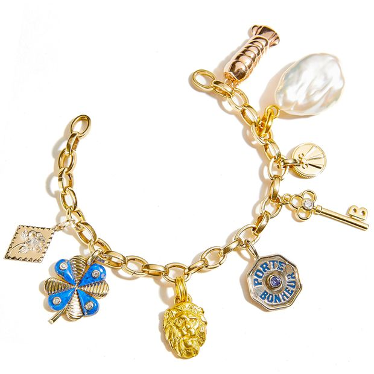 |
| 2021-04-15 10:29:00 | Markets | Chinese Asset Manager Suffers Bond Selloff After Delaying Results | Investors send some prices to as low as 60 cents on the dollar, indicating they see high likelihood of default | Debt from one of China’s biggest asset managers has plunged in value, sending tremors through the market for U.S. dollar bonds of Chinese companies. The selloff in bonds issued by China Huarong Asset Management Co., a giant state-owned financial institution, came after the company missed an end-March deadline to release its 2020 financial results. Investors dumped its bonds, sending some of their prices down to as low as 60 cents on the dollar, according to Tradeweb, indicating they see a high likelihood of default. Defaults by state-backed Chinese companies have become more common in recent years, as China has tried to dispel the idea that it will always make creditors whole. Investors are now grappling with the possibility that this new approach could extend to a company as large and important as Huarong—a major player in Chinese finance with about $22 billion of offshore debt and investment-grade ratings from global credit raters. Huarong, which is majority owned by China’s Ministry of Finance, is the largest of four asset managers that were created by Beijing in the late 1990s when the country’s banks were struggling with large portfolios of bad debt. At the time, Huarong and its peers bought nonperforming loans from China’s biggest state-owned banks and worked to dispose of them by auctioning off and selling the loans to other investors, including foreign banks. Huarong expanded aggressively—adding securities trading, lending and other financial services—before running into trouble. In January its former chairman, Lai Xiaomin, was executed for bribery and corruption offenses—an unusually harsh punishment for a corruption case. |
|
| 2021-04-15 09:49:00 | Markets | Bank of America Profit Doubles After It Releases Reserves for Bad Loans | First-quarter results beat analysts’ expectations, but revenue was flat |  |
|
| 2021-04-15 09:47:00 | U.S. | New York Police Increase Gun Seizures, but Shootings Rise | Sharp jump in gun violence occurs as number of firearms on city streets grows | New York City police have seized more guns so far this year than any other period since 1996, but those efforts aren’t stemming a surge in shootings and homicides that began during the Covid-19 pandemic, police officials said. Investigators say they are concerned by a rise in firearms on city streets and a continued stream of guns being illegally smuggled into the state from the South. “There are absolutely more guns being carried and being used in New York City,” said Michael LiPetri, the New York Police Department’s chief of crime control strategies, in an interview Wednesday. “We see multiple guns at scenes more, and more than I’ve ever seen.” Police investigators believe gang activity is driving the increase in shootings, Chief LiPetri said, and the majority of the NYPD’s gun arrests are related to crews in parts of Brooklyn, Queens and the Bronx. “We are putting more and more officers in the areas that see the most violence,” Chief LiPetri said. |
|
| 2021-04-15 09:38:00 | Life & Arts | Where Islam and Reason Meet | A medieval debate about God’s relationship to goodness can help explain today’s conflicts over religion and society in the Islamic world. | The Western public has become accustomed to hearing certain kinds of unsettling news from parts of the Muslim world. Pakistani Islamists hunt some innocent person for “blasphemy.” The Iranian regime makes a Christian convert rot in jail for “apostasy.” Saudi Arabia gives brutal corporal punishments to liberal activists, whose only “crime” is to offend God—or at least those who rule in His name. All these laws look oppressive to most non-Muslims. Many Muslims feel the same way, which is why many prefer secular governments, keeping their faith personal and communal. Some call for a major reform within Islam. A small but growing minority, who lose all faith, become ex-Muslims. Yet for zealous guardians of the Sharia, or Islamic law, modern responses to such verdicts carry no weight. They believe that a much higher authority, God, is on their side, somehow never doubting whether they are on His side. Calls for reform make them even more defiant, since they are only able to see the opinions of outsiders as whims and seductions. As a Muslim who has been engaging with these issues for more than two decades, I have sadly observed the growing ethical gap between rigid, Sharia-minded conservatives and the modern world. I have also come to realize that this deadlock won’t be overcome by endlessly wrestling over what exactly the Qur’an or the Prophet Muhammad said on this or that matter. Such discussions about the textual sources of the Sharia are important, but there is an even more important layer that lies beneath. This is kalam, or Islamic theology, and especially a mostly forgotten dispute in that theology over the meaning of husn and qubh, literally, “beauty” and “ugliness,” or “good” and “bad.” Muslims began to discuss this matter in the 8th century, a century after the Prophet, as they were trying to make sense of their faith and the empire they were establishing in its name. All agreed that God commands what is good, such as helping a person in need, and prohibits what is bad, such as murder. But a puzzling question soon arose: Does God command or prohibit things because they are inherently good and bad? Or are things good and bad simply because God decreed so? |
|
| 2021-04-15 09:20:00 | Markets | BlackRock Profit Jumps on Broader Pandemic Recovery | The money manager posts profit of $1.2 billion and sees assets under management rise | BlackRock Inc.’s quarterly profit rose 49% as the giant asset manager benefited from surging markets and investors’ willingness to bet on an economic recovery. The money manager posted a first-quarter profit of $1.2 billion, or $7.77 a share, up from $806 million, or $5.15 a share, a year earlier. BlackRock’s revenue rose 19% to $4.4 billion from $3.7 billion in the year ago period when panicked investors fled to cash while a pandemic rippled through the globe. The firm’s adjusted per-share profit of $7.77 slightly beat analyst’s expectations. The world’s largest money manager scaled a new milestone, with assets under management rising to $9 trillion. The firm’s record inflows across all its strategies combined showed investors are emboldened to make new market wagers—even in the face of an uneven economic recovery, the risk of inflation and vaccine bottlenecks that threaten to prolong a world-wide pandemic. |
|
| 2021-04-15 09:12:00 | Markets | Citigroup Reports Higher Earnings, Plans to Trim Consumer Businesses in Asia | Bank says it would exit consumer operations in parts of Asia to focus on wealth management and other businesses | Citigroup Inc. on Thursday reported sharply higher first-quarter profit and said it is shutting down most of its consumer-banking operations in Asia, Europe and the Middle East. The bank posted a profit of $7.9 billion, or $3.62 per share, well above the $2.60 per share forecast by analysts polled by FactSet. A year earlier, Citigroup had reported a quarterly profit of about $2.5 billion, or $1.05 a share. Citigroup also said it would exit its consumer operations in 13 countries, mostly across Asia, to focus on wealth management and other businesses. Jane Fraser, who took over as chief executive officer last month, said in a statement that those consumer banks were excellent businesses, but “we don’t have the scale we need to compete.” She said Citigroup would continue to invest in wealth management and in the businesses that work with corporate clients in Asia. Citigroup is a giant on Wall Street but it is relatively small in U.S. consumer banking, a combination that some analysts and investors have criticized. Ms. Fraser said in January that the bank would restructure the businesses that manage money for wealthy customers, with the goal of getting to clients earlier and keeping them as they grow richer. The bank said Thursday that it will operate consumer banking in four “wealth centers” where it expects strong growth for the wealth-management business: Singapore, Hong Kong, the United Arab Emirates and London. |
|
| 2021-04-15 09:09:00 | Business | Delta Reports Another Quarterly Loss but Says Travel Demand Is Rising | Domestic leisure bookings are rising but many international markets remain closed | Delta Air Lines Inc. signaled the worst of the coronavirus pandemic is likely behind it, as the airline anticipates that travel demand will continue to gain steam in the coming months. Delta’s brighter outlook came as it reported a net loss of $1.2 billion for the first quarter on Thursday—its fifth straight quarter of losses—but said its operation began generating cash again last month for the first time in a year, and passenger revenue that month jumped 50% from February. The beginning of the year, when Covid-19 cases and fatalities were surging, looked bleak for airlines. But as more people started receiving Covid-19 vaccinations, interest in travel has returned. Delta said that its net sales—the difference between new ticket sales and refunds—doubled from January to March. Airlines are hoping that travel will roar back to life this summer, and the recent rise in bookings is the latest sign that the rebound they have long been hoping for might materialize. With domestic leisure bookings at 85% of pre-pandemic levels, Delta believes it is on track to potentially turn a profit this summer. “It’s clear that our business is turning the corner. We’re into an active recovery mode,” Chief Executive Officer Ed Bastian said. |
|
| 2021-04-15 09:05:00 | Business | Shell to Let Shareholders Vote on Shift to Cleaner Energy | Oil giant seeks investor endorsement for its energy transition strategy | LONDON— Royal Dutch Shell PLC detailed a first-of-a-kind shareholder vote over its pivot away from oil, asking investors to endorse its energy transition strategy in a nonbinding vote next month. While environmental groups have long put forward climate-related resolutions at annual shareholder meetings, Shell’s move is the first by an oil major to set up a regular review of its progress in moving away from oil. The decision to offer shareholders a vote comes as energy companies face increasing investor pressure to map out their future in a lower-carbon economy, where oil and gas demand is forecast to fall, with the rollout of technologies such as electric cars and wind and solar power. Earlier this year, Exxon Mobil Corp. outlined plans for a low-carbon business unit after some shareholders argued it should focus more on investments in clean energy, while BP PLC has pledged to cut oil output by around 40% over the coming decade and invest more in renewable energy. Shell laid out plans in February to reduce its dependence on oil, saying it would cut output by 1%-2% a year, while boosting spending on low-carbon energy. |
|
| 2021-04-15 09:01:00 | Markets | Coinbase, Dell, Citigroup: What to Watch When the Stock Market Opens Today | Coinbase is having a strong morning after listing on Wednesday | Here’s what we’re watching as markets kick into gear on Thursday. Cryptocurrency exchange Coinbase is expecting to log a significant spike in users in the first quarter. Recent surges in bitcoin and other digital currencies helped fuel interest in its direct listing. |
|
| 2021-04-15 09:00:00 | Politics | Census Data to Reveal Which States Lose, Gain U.S. House Seats | Redistricting process based on new numbers will help determine which party controls the chamber after 2022 elections | WASHINGTON—After months of delays, the once-in-a-decade fight over the contours of congressional seats will officially begin later this month, when the Census Bureau releases the first round of data determining which states will gain or lose House seats. The outcome of the redistricting process will be one of the biggest factors determining which party controls the House after next year’s elections. Democrats currently hold a razor-thin 218-212 House majority, with five vacancies. New maps for both House and state legislative districts are drawn at the state level, with the process varying by state and Republicans in control in more states than Democrats are. For both parties, the official guidance on which states will gain or lose a seat is likely to usher in a wave of new decisions based on the emerging political reality: lawmakers announcing retirements or statewide runs and candidates deciding to jump into races. “It’s like the gun going off at the beginning of the race,” said Adam Kincaid, the executive director of the National Republican Redistricting Trust. “Everything we’ve been doing up until this point is basically practice.” Lawmakers and party officials already have some sense of which states are likely to add or lose seats, based on population estimates released by the Census Bureau last year. One question that won’t be answered until the data is released this month is whether New York will lose two seats or just one, with Alabama shouldering the other loss. The new data will also dictate the population size of new districts (after the 2010 census, districts were designed to have an average of 711,000 people). Its release was delayed for months by the pandemic and the Trump administration’s legal battle over whether immigrants illegally in the U.S. should be included, which was immediately ended by the Biden administration. |
|
| 2021-04-15 08:58:00 | Business | Electric-Vehicle Startup XPeng Bets on the Tech That Tesla Rejects | One of three U.S.-listed Chinese EV makers, it is relying on innovation to overtake its rivals | GUANGZHOU—Once a Tesla Inc. fan who owned four of its vehicles, He Xiaopeng, co-founder of Chinese electric-vehicle startup XPeng Inc. , now wants to overtake the car company that originally inspired him. While acknowledging Tesla as an inspiration, Mr. He said XPeng—one of three Chinese EV companies listed in the U.S.—can win using innovation, an area in which Chinese technology companies have become increasingly formidable. “We have a saying in China,” Mr. He said in an interview Wednesday at XPeng’s headquarters in the southern city of Guangzhou. “To defeat someone, you need to do something different.” XPeng, alongside its U.S.-listed peers Li Auto Inc. and Nio Inc., has taken investors on a wild ride over the past eight months. The company’s August listing on the New York Stock Exchange valued it at $8 billion. By November its value had jumped to nearly $58 billion. Now it is back down to about $27 billion. In March, the Shanghai-based research firm Hurun Report said Mr. He was worth $11 billion. |
|
| 2021-04-15 08:40:00 | Politics | U.S. Puts Fresh Sanctions on Russia Over Hacking, Election Interference | In addition to financial penalties, U.S. expels 10 diplomats from Russian embassy | WASHINGTON—President Biden signed a wide-ranging action against the Russian government in response to what it described Thursday as “the full scope of Russia’s harmful foreign activities,” ranging from election interference to hacking. As part of the order, the administration imposed sanctions on 32 entities and individuals over attempts directed by the Russian government to influence the 2020 election. It also said, for the first time, it has “high confidence” that Russian intelligence undertook the massive SolarWinds hack of U.S. government and corporate computer systems. The Treasury Department also issued a directive that prohibits U.S. financial institutions from participation in the primary market for ruble or non-ruble denominated bonds issued after June 14, 2021 by the Central Bank of the Russian Federation, the National Wealth Fund of the Russian Federation, or the Ministry of Finance of the Russian Federation. Lending ruble or non-ruble denominated funds to the Central Bank of the Russian Federation, the National Wealth Fund of the Russian Federation, or the Ministry of Finance of the Russian Federation is also being prohibited. Ten Russian diplomats have also been expelled from the embassy in Washington, D.C., as part of the order, the statement said. |
|
| 2021-04-15 08:37:00 | U.S. | CDC Identifies Small Group of Covid-19 Infections Among Fully Vaccinated Patients | Incidence is rare, occurring in only 0.008% of cases and in line with expectations | The U.S. Centers for Disease Control and Prevention has identified a small cohort of approximately 5,800 cases of Covid-19 infection among more than 66 million Americans who have completed a full course of vaccination. These so-called breakthrough cases, which are defined as positive Covid-19 test results received at least two weeks after patients receive their final vaccine dose, represent 0.008% of the fully vaccinated population. Officials said such cases are in line with expectations because the approved vaccines in the U.S. are highly effective but not 100% foolproof. They are a reminder that even vaccinated people are at risk and should continue to take precautions such as masking and social distancing in many circumstances. The CDC earlier this year asked state health departments to track and report breakthrough cases to the federal government. So far, the cases that have been reported come from about 40 states. Separately, The Wall Street Journal contacted health departments in all 50 states and the District of Columbia to ask how many breakthrough cases had been identified. Twenty-three states responded, reporting a total of 4,172 breakthrough cases. |
|
| 2021-04-15 08:00:00 | World | China Figures Out How to Produce Must-See Propaganda TV | ‘Minning Town’ is part of a sophisticated turn in Communist Party messaging; an international version, with fewer meeting scenes, is in the works | As China’s Communist Party revs up its 100th-birthday plans, it is celebrating a new addition to its list of accomplishments: the production of a genuinely popular patriotic TV drama. “Minning Town,” a 23-episode series about the party’s poverty-alleviation efforts, scored a 9.4 out of 10 on Chinese review site Douban.com when it aired earlier this year—besting the likes of Netflix ’s “The Queen’s Gambit.” An international version is in the works, but the English-subtitled original is already available on YouTube, where it has accumulated millions of views. Chinese propaganda officials are now dissecting the show to figure out how to replicate its success. For all its hard propaganda work, the post-Mao Communist Party has struggled to win eyeballs away from commercial TV and film, whether domestic or foreign. Even with the power to compel the country’s top directors and biggest stars to participate, officials have had to juice box-office numbers for films about party history by requiring state-owned companies to buy tickets for their employees. That frustrates Chinese leader Xi Jinping, who has repeatedly exhorted his propaganda officials to “tell China’s story well.” In a speech published last month by the party’s main theoretical journal, Mr. Xi said it was imperative to “encourage the creation of artistic content about party history, especially film and TV.” |
|
| 2021-04-15 08:00:00 | Business | Cable Companies Emerge as Force in Cellphone Business | More than five million Americans have turned to cable providers for cellphone service, attracted by lower prices and ease of adjusting plans | The fastest-growing mobile-phone carriers in the U.S. aren’t phone companies. More than five million Americans now pay for mobile-phone service through their cable-TV providers, enticed by low prices and the ability to easily adjust their phone plans, a flexibility that proved particularly useful during the pandemic. Cable operators such as Comcast Corp. and Charter Communications Inc. joined the wireless sector in recent years with one goal in mind, executives and analysts say: Give their customers another reason not to leave, especially because pay-TV service businesses have been quickly losing subscribers as consumers turn to streaming services and internet-based TV bundles for entertainment. Now, the companies are looking to generate profits from their mobile businesses. “I think we’re real, right?” Comcast Finance Chief Mike Cavanagh said of the company’s Xfinity Mobile unit during a recent conference, adding that the business would be profitable this year. “I think there’s no one that doubts that anymore.” Comcast on Thursday introduced a new slate of mobile plans in a push to undercut traditional wireless companies. Those companies remain dominant, with nearly 50 times as many mobile-phone subscribers as their cable counterparts at the end of 2020. |
|
| 2021-04-15 08:00:00 | Real Estate | Texas Tells Judges They Can Ignore Federal Eviction Ban | Some courts begin approving evictions after state stops enforcing U.S. moratorium, confusing landlords and putting tenants at risk | Texas has stopped enforcing a federal eviction ban, a move that is accelerating some tenants’ displacement and puts the state on a potential collision course with the U.S. government. Local courts throughout Texas have postponed thousands of eviction cases since September for tenants who declare they have missed rent payments due to financial hardship. The postponements were in compliance with a national moratorium on evictions during the pandemic, a policy that has been extended until June 30. But last month, the Texas Supreme Court let its guidelines for enforcing the ban expire. A state advisory body for Texas eviction courts then said that without that guidance, local judges are no longer bound to uphold the national ban. Several other state court systems, including those in Florida and Ohio, haven’t issued formal guidelines for how the federal moratorium should be applied, leaving the decision-making up to individual judges or local municipalities. That has led to some eviction rulings against tenants in some of those states, according to tenant advocates and housing lawyers. In Texas, the recent reinterpretation of the federal ban could open the door to widespread evictions, lawyers and advocates say. In the state’s Collin County, Judge Michael Missildine is now approving evictions in his courtroom and handing the orders off to the local constable’s office for enforcement. “They’re starting to do them on a very regular basis,” he said. |
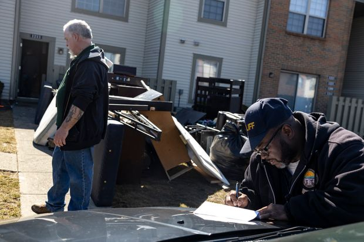 |
| 2021-04-15 08:00:00 | CFO Journal | CFO Pay Rises as Their Companies Navigate Coronavirus Pandemic | Median pay for finance chiefs at the largest U.S. companies rose 7% during the 2020 fiscal year, largely driven by stock-based compensation | 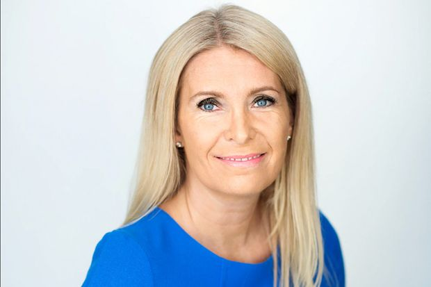 | |
| 2021-04-15 07:57:00 | Business | TSMC Sets Up for Soaring Chip Demand | World’s largest contract chip maker to increase investment budget, raise revenue growth forecast | 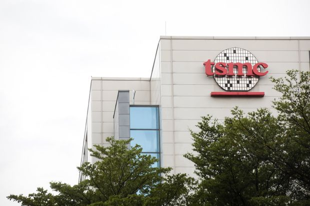 | |
| 2021-04-15 07:51:00 | Economy | Turkey’s Central Bank Holds Rates After Erdogan’s Latest Shuffle | Previous central bank governor was fired for raising rates, going against the president’s desire to stimulate growth | ISTANBUL—Turkey’s central bank held interest rates steady on Thursday in the first major decision since President Recep Tayyip Erdoganreplaced the institution’s chief last month in a move that sparked a selloff in Turkish assets. The bank kept its key one-week repo rate at 19%, a move that is unlikely to woo foreign investors back. The ousting of Gov. Naci Agbal was the latest in a series of abrupt economic decisions by Mr. Erdogan, and has heightened concern over the nation’s economic stability and intensified the political challenges for Turkey’s leader. Mr. Agbal’s removal caused investors to pull nearly $2 billion from the country in the following weeks. During his four months in office, Mr. Agbal had inspired investors’ confidence by raising interest rates in an effort to control inflation, but he ran afoul of Mr. Erdogan, who favors low rates to encourage economic growth. The new governor, Sahap Kavcioglu, is a former member of parliament from Mr. Erdogan’s Justice and Development party who has also voiced support for low interest rates. “The CBRT will continue to use decisively all available instruments in pursuit of the primary objective of price stability,” the central bank’s Monetary Policy Committee said in a statement. |
|
| 2021-04-15 07:51:00 | Politics | Asian-American Lawmakers to Press Biden on Hate Crimes, Cabinet Representation | The Senate recently advanced a bill to expedite the Justice Department’s review of hate crimes related to the coronavirus pandemic. | WASHINGTON—Asian-American lawmakers will press President Biden to take more action to counter discrimination and inequities in their first meeting of his presidency, after the Senate advanced a bill to expedite the Justice Department’s review of hate crimes related to the coronavirus pandemic. The moves come one month after a series of shootings in Atlanta left six women of Asian descent dead and sparked fresh attention to hate crimes against Asian-Americans. Lawmakers planning to attend Mr. Biden’s meeting Thursday with members of the Congressional Asian Pacific American Caucus said they hope to address a range of policy issues, from housing and health disparities to immigration, as well as Asian-American representation in Mr. Biden’s administration. “We want to talk about numerous issues,” said Rep. Judy Chu (D., Calif.), who chairs the House Congressional Asian Pacific American Caucus. “We’ve had an increase in anti-Asian hate crimes and violence…Eighteen states still don’t have a mandate to report hate crime data, and three states don’t even have a hate crime statute.” Although Mr. Biden has prioritized diversity in his cabinet, Asian-American groups say it is the first in more than 20 years not to include an Asian-American or Pacific Islander secretary. Katherine Tai, Mr. Biden’s U.S. trade representative, is the first Asian-American and the first woman of color to be named to the job. The trade representative isn’t always part of the president’s cabinet, but Mr. Biden has included Ms. Tai in his. |
|
| 2021-04-15 07:45:00 | Business | UnitedHealth Posts Stronger Quarterly Results as Membership Grows | The health-insurance company expects the pandemic to continue to weigh on the industry this year | UnitedHealth Group Inc. recorded stronger year-over-year revenue and profit figures for the first three months of 2021, driven by growth in its insurance programs for communities and seniors and its health-services business. Although the coronavirus pandemic is still weighing on the healthcare industry, the Minnetonka, Minn.-based company said Thursday that its first-quarter results had boosted its outlook for the full year. UnitedHealth is the parent company for insurer UnitedHealthcare, as well as the Optum health-services business. In the latest quarter, the number of people served by UnitedHealthcare’s medical plans grew by more than 1 million to 49.5 million, driven by expansion of the number of people on its Medicare Advantage plans. A Medicaid contract award in Oklahoma, growth in specialty products such as dental and vision plans, and a strong selling season for commercial benefits also contributed to the insurance division’s first-quarter growth, UnitedHealth said. UnitedHealth’s total revenue grew by 9% to $70.2 billion, up from $64.4 billion in the same three months a year earlier. Revenue from premiums improved to $55.49 billion, from $50.64 billion a year earlier. |
|
| 2021-04-15 07:22:00 | World | Secretary of State Antony Blinken in Afghanistan on Unannounced Visit | Trip by top Biden envoy comes as U.S. plans military exit | KABUL, Afghanistan—U.S. Secretary of State Antony Blinken visited Afghanistan in a gesture of U.S. commitment to the country that comes after President Biden announced a day earlier that he is ending the American military mission. In an unannounced trip Thursday, Mr. Biden’s top foreign-policy aide met Afghan President Ashraf Ghani, just hours after Mr. Biden pledged to withdraw U.S. troops by Sept. 11, the 20th anniversary of the 2001 terrorist attacks. “I wanted to demonstrate with my visit the ongoing commitment of the United States to the Islamic Republic and the people of Afghanistan,” Mr. Blinken told Mr. Ghani and others at the presidential palace. “The partnership is changing, but the partnership is enduring.” Besides Mr. Ghani, Mr. Blinken also met Abdullah Abdullah, chairman of the country’s High Council for National Reconciliation and the Afghan government’s chief peace envoy. For the U.S., the visit is a chance to show the Afghan people that American diplomats and institutions will continue to support the country’s development, even as soldiers from the U.S. and other North Atlantic Treaty Organization countries begin to depart, starting this month. |
|
| 2021-04-15 07:03:00 | Markets | Investors Can’t Afford the Zillow Dream | Online real-estate companies have thrived, but less so their stocks recently | If you are waiting for Zillow Group to tell you when the real-estate market has peaked, you might be waiting a while. You may also miss the optimal time to sell your home. Without much in the way of live sports to watch last year, some U.S. consumers turned to the real-estate market for entertainment. The so-called “Zillow fantasy” led to homes flying off the block in days, with selling times accelerated by low inventory and affordable mortgage rates. All the attention became a boon for online real-estate companies who profit off home transactions. Newly public Compass , which generates revenue through commissions on home sales, said it grew its top line 54% last year. For the fourth quarter, Redfin said its core business of brokering home sales saw revenue rise 51%, while revenue for its mortgage business grew 210%. In February, Zillow said total visits to its site rose 19% last year, propelling its shares to all-time highs that month. Listen to the prophets at real-estate platforms, and you might think to double down on your investments. On Wednesday, Zillow said strong demand for homes is likely to continue post-pandemic. Company economist Arpita Chakravorty also noted lowered health risks from open houses and renewed financial confidence should bring even more sellers into the market. In March, the company forecast existing home sales would rise by more than 17% this year on an annual basis. It also forecast U.S. home value growth won’t peak on an annual basis until August. Redfin seems to be on the same wavelength. Its chief economist, Daryl Fairweather, agrees many homeowners have been reluctant to sell, either because of Covid-19 or because they haven’t had clarity on their future work situation. For those reasons, the end of the pandemic should fuel more home sales, Ms. Fairweather said. |
|
| 2021-04-15 07:00:00 | Homes | U.S. Housing Market Is Nearly 4 Million Homes Short of Buyer Demand | Freddie Mac says gap has widened significantly in past two years as builders struggle to keep up | The U.S. housing market is 3.8 million single-family homes short of what is needed to meet the country’s demand, according to a new analysis by mortgage-finance company Freddie Mac . The estimate represents a 52% rise in the nation’s home shortage compared with 2018, the first time Freddie Mac quantified the shortfall. The figures underscore the severity of the housing deficit, which is a major factor fueling the current red-hot housing market. The shortage is especially acute for entry-level homes, which makes it more expensive for first-time home buyers to enter the market, said Sam Khater, chief economist at Freddie Mac. “We should have almost four million more housing units if we had kept up with demand the last few years,” Mr. Khater said. “This is what you get when you underbuild for 10 years.” Freddie Mac reached its shortage figure by assessing the amount of single-family home building needed to match demand from household formation, second-home purchases and replacements of damaged or aging U.S. homes, and comparing that with the pace of construction. |
|
| 2021-04-15 06:57:00 | Life & Arts | The Santa Fe of My Childhood: Remembering a Time Before Covid | Novelist Kirstin Valdez Quade spent years visiting the city’s museums, close to her beloved grandmother’s house. Now that Covid has devastated her family and kept her away, she longs for those treasure-filled sanctuaries. | LIKE EVERYONE ELSE, I’ve spent a chunk of the pandemic fantasizing about all the things I’ll do when this is all over. Visit family. Travel. Over and over I find myself longing for museums. My love affair started early. I have happy memories of spending the day with my aunt at the Natural History Museum in Albuquerque when I was about five. Predictably, I was mostly drawn to the dinosaurs. Later, because money was tight, my mother would regularly use museums as free babysitting, a fact she hates being reminded of. When we lived in Salt Lake City, she’d leave my little sister and me at the Utah Natural History Museum, where, if you dropped coins down the throat of a T-Rex, he’d bellow, “Feed me money,” or the Hansen Planetarium, or when we moved again, the Arizona Historical Society, where my favorite exhibit was a fake copper mine. But the first museums I loved were the ones right down the road from my grandmother’s home in Santa Fe, N.M. When I was a child, the grounds felt like an extension of my grandmother’s trees, part of the domain I was allowed to roam. In 1960 when my grandfather built the house among the piñon where my mother was raised, the roads were still dirt and there were two museums a short walk away: the Wheelwright Museum of the American Indian and the Museum of International Folk Art. In 1961, the Museum of Indian Arts and Culture opened too. Now, the neighborhood is fancy. There are more houses, the roads are paved. The Museum of Spanish Colonial Art joined the others, plus the Santa Fe Botanical Gardens and a café. The area has been rebranded as Museum Hill. When I was about 10, my grandmother and I spent an afternoon at the Wheelwright Museum of the American Indian. The museum was nearly empty and we walked through the quiet galleries filled with finely patterned baskets, silver jewelry and intricately painted Pueblo pottery. We were nearly ready to go when we came upon a Navajo docent demonstrating weaving on an upright loom. She invited me to try. I sat on the floor before the frame, pulled the wool between the taut rows of warp, thumping the weft firmly into place with the wooden comb. I loved the precision, the rhythm, the way the rug grew incrementally up the loom. My grandmother is not especially patient—I don’t know that I’ve ever seen her watch a television show all the way through or read a book—and she was always bustling around or cooking. Yet, that day, she sat quietly on a chair doing nothing at all while the sun streamed in the window and I wove happily into the afternoon. |
|
| 2021-04-15 06:46:00 | Business | Merck, Partner Halt Covid-19 Treatment Trial for Hospitalized Patients | Companies to advance a separate study testing their oral antiviral drug in treating outpatients who are at high risk of complications | Merck & Co. and its partner Ridgeback Biotherapeutics LP said they are stopping a trial of their experimental Covid-19 drug after it failed to help hospitalized patients, delivering another setback to doctors seeking treatments to use for the disease. The companies said they would move forward with a separate study that is testing the oral antiviral drug in treating patients early in the course of the disease and who are at high risk of Covid-19 complications. Early study results on hospitalized patients found that the treatment is unlikely to reduce hospitalization stays and deaths, the companies said Thursday. Merck said testing found that the drug, called molnupiravir, inhibits replication of the virus. But the trial of people who weren’t hospitalized was too small to show that the drug reduced clinical symptoms during their early treatment, Merck said. If the drug is proven effective in outpatients after the next, larger round of testing, Merck could file for an emergency-use authorization in the second half of this year, the company said. |
|
| 2021-04-15 06:35:00 | Markets | Why Barclays Is One of the Year’s Best-Performing Bank Stocks | Activity in the U.K. lender’s investment banking arm is spurring the recovery, a vindication for Chief Executive Jes Staley | Barclays PLC’s stock has long been stuck in the mud, but so far this year it is zooming ahead of the likes of JPMorgan Chase & Co. and Morgan Stanley . Shares of the London-based lender have risen 28% this year, making it one of the best-performing investment-banking stocks and taking it briefly above its pre-pandemic level. JPMorgan, by contrast, is up 19%, and Morgan Stanley has risen 18%. Spurring the recovery is a surge of activity in the U.K. lender’s investment-banking arm. It is a vindication for Chief Executive Jes Staley, who has clung to the idea that a robust investment bank complements Barclays’s traditional British banking operations. “He had a lot of pressure to do more to shrink the investment bank for a number of years and resisted that,” said Christopher Cant, an analyst at Autonomous Research, a unit of AllianceBernstein. “That’s to his credit.” Quarterly results from rivals Goldman Sachs Group Inc. and JPMorgan this week point to another strong quarter for investment banks generally. |
|
| 2021-04-15 06:28:00 | World | Reviving the Iran Nuclear Deal: What to Expect From the Talks and What Is at Stake | Indirect U.S.-Iran talks mark a potential thaw in relations. But any agreement on the 2015 pact faces a long and rocky road. | Diplomats from the U.S. and Iran converged in Vienna in early April in an attempt to revive the beleaguered 2015 nuclear agreement, the first potential thaw in diplomatic relations between Tehran and Washington since the Trump administration left the accord in 2018. As the second round of talks kicked off on April 15, American and Iranian officials were still not meeting directly, but were working through European intermediaries, who also gathered in the Austrian capital alongside representatives from the other parties to the deal, Russia and China. The meetings in Vienna marked a diplomatic breakthrough and were seen by Western diplomats as a necessary first step toward salvaging a deal that put limits on Iran’s nuclear activity in return for sanctions relief. After leaving the nuclear accord, the Trump administration imposed heavy sanctions on Iran. Participants on all sides said the first meetings had been constructive and agreed to meet again in Vienna this week. However, the second round of talks began in the shadow of an attack Sunday on Iran’s main nuclear facility in Natanz, and Tehran’s response, which was to increase its uranium enrichment to 60%, bringing it closer than ever to weapons grade of 90%. |
|
| 2021-04-15 06:02:00 | CIO Journal | E-Commerce Company Signifyd Raises $205 Million in Investor Funding | Company says demand for its AI-based fraud protection software increased as e-commerce surged during the pandemic | ||
| 2021-04-15 06:00:00 | Markets | JPMorgan Unveils Goal to Support $2.5 Trillion in Climate-Friendly Investments | Climate activists have for years called on the bank to use its lending power to protect the environment | JPMorgan Chase & Co. is pledging to facilitate $2.5 trillion worth of climate-conscious transactions over the next decade. The bank, the U.S.’s largest by assets, said it would deploy its own capital and offer its expertise to help clients and customers to “accelerate the transition to a low-carbon economy.” It is unclear how much of the $2.5 trillion will come from JPMorgan itself. All relevant transactions the bank finances, structures or otherwise facilitates will count toward the target, the bank said. Climate activists and the bank’s own investors have for years called on it to use its lending power to protect the environment. JPMorgan had some $40 billion in lending exposure to oil-and-gas companies last year, and the Rainforest Action Network considers it the world’s biggest financier of fossil fuels. JPMorgan expects more than $1 trillion of the commitment to go toward projects that support green energy, including wind and solar. The bank financed or facilitated more than $55 billion worth of green energy projects in 2020. |
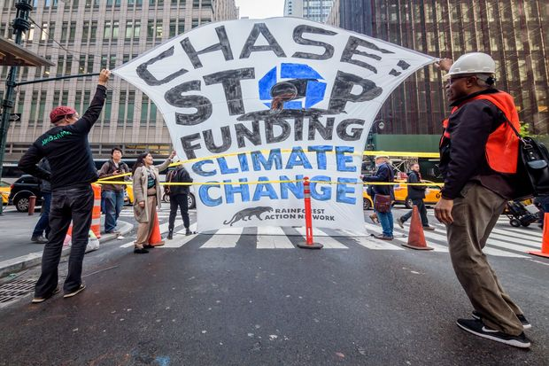 |
| 2021-04-15 05:40:00 | World | German Court Kills Berlin’s Radical Push to Limit Gentrification | City’s rent cap declared unconstitutional in highly anticipated decision over tool to stop surging house prices | BERLIN—One of the world’s most radical anti-gentrification experiments came to an end on Thursday after Germany’s constitutional court declared Berlin’s residential rent cap void. The decision ends months of uncertainty for property owners and renters. Berlin has some of the lowest residential rents of all European capitals but they have also risen very rapidly, nearly doubling over the past decade, persuading the left-wing local government to act last year. Governments from New York City to Paris have introduced measures to control house-price inflation in the era of gentrification. The Covid-19 pandemic—and the stimulus packages, ultralow interest rates and changes in buyer behavior that have come with it—has propelled housing prices even higher around the world. But the Berlin law, passed in February last year, went further than some traditional rent-control legislation by not just freezing rents in the city but also reducing them in many cases. In an initial stage, the law capped the rent of some 1.5 million Berlin rental apartments, or 90% of all rentals, at June 2019 levels for five years. It then mandated maximum rents for buildings based on their age, allowing tenants who paid more than this level to cut their rents. |
|
| 2021-04-15 05:30:00 | Economy | Covid-19 Stimulus, Vaccinations Likely Spurred March Retail Sales Surge | Economists expect government aid, eased business restrictions and warmer weather contributed to jump in spending | U.S. shoppers likely boosted retail spending sharply in March as federal-stimulus funds made their way to households, warmer weather set in and the economy reopened more fully from pandemic-related restrictions. Economists forecast that the Commerce Department will report Thursday that retail sales—a measure of purchases at stores, at restaurants and online—increased by 6.1% last month, compared with a 3% drop in February. “There were a lot of positive forces for consumers in March,” said Michelle Meyer, head of U.S. economics at Bank of America . “The reopening progressed throughout March, with more and more states easing restrictions, more and more people becoming vaccinated and feeling comfortable re-engaging in the economy and activities that they did previously.” Economists said retail sales last month also likely moved higher as they came off weakness in February, when sales were damped by severe winter storms. The economists expect robust gains for autos because of strong consumer demand for vehicles and higher gasoline sales as prices at the pump rose last month. Separate economic readings due Thursday are expected to show an increase in March industrial production and a decrease in the number of workers filing for unemployment benefits. U.S. consumer confidence is at its highest levels since the Covid-19 pandemic began, as signs of momentum in the economic recovery build. U.S. employers, for example, added a seasonally adjusted 916,000 jobs in March as the unemployment rate fell to 6%. |
|
| 2021-04-15 05:30:00 | NATO Wargame Examines Cyber Risk to Financial System | Financial industry helped plan scenarios in which widespread disruption would hit banks and other firms | |||
| 2021-04-15 05:30:00 | Economy | Unemployment Claims Likely Fell as Covid-19 Recovery Picked Up | Applications for jobless benefits have declined this year but are still historically high | Unemployment claims likely resumed their decline as the U.S. economic revival picked up speed. Economists surveyed by The Wall Street Journal expect that the Labor Department will report that jobless claims, a proxy for layoffs, fell to 710,000 last week from 744,000 a week earlier. That would be down from a recent high of about 900,000 a week in January, but still way above the levels of around 220,000 that prevailed early last year, before the Covid-19 pandemic hit the U.S. economy. “The labor market is on a recovery path,” said AnnElizabeth Konkel, economist at the job site Indeed. “The recovery is 100% tied to the public health situation,” she added. The economy is showing signs of improvement as vaccination rates power consumer spending, governments relax restrictions on businesses, and households and federal-stimulus funds flow through the economy. |
|
| 2021-04-15 05:30:00 | Markets | Ant and Others Embraced Crowdfunded Medical Coverage, but Now It’s Under Beijing’s Microscope | Chinese regulators have warned that the industry has the characteristics of commercial insurance without being supervised as such | In China, a financial-technology innovation that has sent billions of dollars to critically ill people is losing its shine and drawing regulatory scrutiny, creating more uncertainty for Jack Ma’s Ant Group Co., the industry’s biggest player. The business, known as “mutual aid,” has seen tens of millions of strangers chipping in small amounts of money—typically the equivalent of less than $2 each month—to fund lump-sum payouts of as much as around $45,000 to people who suffered serious injuries or were diagnosed with certain illnesses such as cancer, severe strokes and Ebola. The concept of crowdfunded critical-illness coverage has caught on among internet-technology startups and giants over the past few years. Many saw it as a way to provide benefits to their users and keep people connected to their apps. The companies said their services differed from commercial health insurance because users weren’t required to pay anything up front, and were instead committing to share the cost of future payouts to others. Financial regulators don’t see it that way. As mutual-aid services have surged in popularity, the country’s banking and insurance regulator has warned that the industry has the characteristics of commercial insurance without being supervised as such and could pose risks to individuals and the companies. Earlier this week, Chinese financial regulators laid out a five-pronged business rectification plan for Ant, which will restructure itself and apply to become a financial holding company that would be overseen by the People’s Bank of China. While regulators didn’t directly address Ant’s mutual-aid service, the company said it would ensure that its financial-related businesses were fully regulated. |
|
| 2021-04-15 05:24:00 | Markets | Stock Futures Rise Ahead of Another Volley of Earnings | S&P 500 and Nasdaq futures gained ahead of results from PepsiCo and Delta Air Lines | U.S. stock futures rose ahead of earnings and fresh economic data that will indicate the state of consumer spending and the labor market. Futures tied to the S&P 500 gained 0.5%. Contracts for the Dow Jones Industrial Average added 0.4%. Futures for the technology-heavy Nasdaq-100 were up 0.7%, indicating tech shares may recover some ground after the index fell 1.3% Wednesday. Investors will be watching earnings to assess whether stocks can grind higher. Companies slated to report quarterly results ahead of the opening bell include UnitedHealth Group , PepsiCo , Citigroup and Delta Air Lines . Goldman Sachs Group and JPMorgan Chase posted record quarterly profit Wednesday. An anticipated economic recovery has led some investors to buy shares of companies sensitive to a rebound, such as energy, travel and banks, which has helped send indexes to repeated record highs this year. “We want to see that the 2021 numbers—even the 2022 numbers—are going to continue to look good,” said Esty Dwek, head of global market strategy at Natixis Investment Solutions. “We want to see what guidance is going to be. For a lot of 2020, we had no guidance.” |
 |
| 2021-04-15 04:42:00 | Markets | The Dollar’s Sliding Share in Global Currency Reserves is a Red Herring | The greenback is at a 25-year low in official currency reserves, a figure that understates the currency’s importance in a number of ways | The dollar’s share in global foreign-exchange reserves slipped to its lowest level since the mid-1990s last year, giving fresh fuel to arguments that the greenback’s role as the top global currency is under threat. But reserve figures paint an incomplete picture of the currency’s heft. A broader view of demand for dollars shows there is still no meaningful challenge to their role. The quarterly International Monetary Fund data show the dollar’s share of reserves below 60% for the first time since 1995. At 21.2%, the euro’s share is at its highest level in six years, and at 6%, the Japanese yen is at its highest in two decades. One of the reasons is a simple mechanical one. The dollar depreciated last year, meaning that the dollar value of nondollar assets in a mixed-currency portfolio rose. In the IMF data, that is often the largest factor in each given quarter, rather than active buying and selling. But the second effect of a falling dollar, which is less immediate, should act as a counterweight. As the greenback falls in value, especially against the currencies of exporters with large currency reserves, it encourages them to buy Treasurys and other U.S. assets to keep their own currencies from rising too quickly and damaging competitiveness. |
|
| 2021-04-15 01:56:00 | Politics | House Panel Advances Bill to Study Slavery Reparations | Legislation calls for creating a commission to study the history of slavery and discrimination against Black Americans | WASHINGTON—A House panel approved legislation that would create a commission to study the possibility of offering reparations to the descendants of enslaved people in the U.S. Democrats on the House Judiciary Committee advanced the legislation Wednesday night over the objections of Republicans, voting 25-17 to bring it to the full chamber. While the vote marks a milestone for the legislation, first introduced in the House in 1989 by former Rep. John Conyers (D., Mich.,), the bill still faces an uphill climb to becoming law. The legislation calls for the creation of a 13-member commission that would study the history of slavery and discrimination against Black Americans and make recommendations about possible remedies to address their lasting impact. It also tasks the commission with considering a national apology for the treatment of enslaved people and their descendants. “The goal of this historical commission and its investigation is to bring American society to the new reckoning with how our past affects the current conditions of African-Americans,” said Rep. Sheila Jackson Lee (D., Texas), the lead author of the legislation, dubbed H.R. 40 in reference to the broken Civil War-era promise to give freed slaves 40 acres and a mule. |
|
| 2021-04-15 01:30:00 | CMO Today | Publicis Reports a Return to Organic Revenue Growth | Ad conglomerate beat revenue expectations, citing growth in the U.S. and Asia, as well as increased demand for digital services | ||
| 2021-04-14 23:25:00 | U.S. | U.S. to Sanction Russia, Expel Diplomats Over Alleged Election Interference, Hacking | WASHINGTON—The Biden administration will impose a range of retaliatory measures against Russia on Thursday in response to Moscow’s alleged election interference, a widespread hacking campaign and other malign activity, according to people familiar with the matter. Using a new executive order, the measure will expand the existing prohibitions on U.S. banks trading in Russian government debt, two of the people said. Previous prohibitions targeting portions of Russian sovereign debt shook Russia’s markets and added to its economic woes. That order prohibits U.S. financial institutions from buying new bonds directly from Russia’s central bank, finance ministry and the country’s massive sovereign wealth fund after June 14. Among other measures, 10 Russian diplomats will be expelled, including some due to allegations that Russia offered to pay bounties to militants in Afghanistan to kill U.S. military service members, the people said. Sanctions will be imposed for Russia’s cyber intrusions, election meddling and occupation of Crimea. Russia’s foreign-intelligence service, the SVR, will be formally accused of carrying out the so-called SolarWinds hack of U.S. government and corporate computer systems. Collectively, the actions are meant to punish Moscow while also deterring the Kremlin from further provocations. |
||
| 2021-04-14 21:12:00 | CFO Journal | Dell CFO Looks to Use VMware Proceeds to Bring Down Debt | Lower debt levels could over time boost the company’s credit rating, Tom Sweet says | ||
| 2021-04-14 20:45:00 | Politics | Democratic Lawmakers to Present Plan to Expand Supreme Court | Initiative runs counter to Biden administration’s commission on overhauling court after three conservative Trump appointments | WASHINGTON—Democratic lawmakers plan to introduce legislation on Thursday that would add four seats to the Supreme Court, an initiative that has slim hopes of passage but reflects progressives’ impatience with President Biden’s cautious approach toward overhauling a court that turned to the right during the Trump administration. Last week, Mr. Biden signed an executive order establishing a 36-member commission to report back within six months on possible changes to the Supreme Court’s membership, jurisdiction and lifetime terms. Mr. Biden appointed former Obama White House Counsel Bob Bauer and Yale law professor Cristina Rodriguez as co-chairmen of the commission; other members include many widely respected scholars, including some noted conservatives. “We need more than a commission to restore integrity to the court,” said Sen. Ed Markey of Massachusetts, who is co-sponsoring the legislation with the House Judiciary Committee chairman, Rep. Jerrold Nadler of New York, and Reps. Hank Johnson of Georgia and Mondaire Jones of New York. The White House didn’t immediately respond to a request for comment. The Supreme Court declined to comment. The sponsors plan to announce the legislation with a Thursday press conference outside the Supreme Court, but there’s little chance the bill will make headway. Republicans are united in opposition to a plan that would undo the conservative majority on the Supreme Court, and even many Democrats critical of the court are reluctant to prejudge the issue while Mr. Biden’s commission is at work. |
|
| 2021-04-14 19:23:00 | U.S. | Andrew Cuomo Impeachment Hotline Gets Over 100 Messages | Investigators sort through calls and emails as the governor faces harassment and other allegations | ALBANY, N.Y.—More than 100 messages have come through a hotline set up two weeks ago by investigators working on the impeachment probe into New York Gov. Andrew Cuomo, a state lawmaker overseeing the effort said. Republican Assemblyman Michael Montesano said the investigators—a team of lawyers at the law firm Davis Polk & Wardwell LLP hired by the New York state Assembly—were sifting through the calls and emails. Mr. Montesano said he didn’t have more information about the tips that have been received. The Assembly launched an impeachment probe March 11. If it votes to impeach Mr. Cuomo, it would be the first impeachment of a New York governor since 1913. The investigation initially began to look into sexual-harassment allegations against the governor, his administration’s Covid-19 policies and the construction of a bridge spanning the Hudson River. It has since expanded to examine the use of state resources to test members of the governor’s family for Covid-19 and whether staff in the governor’s office helped Mr. Cuomo write a memoir. Last month the impeachment investigators, who are overseen by the state Assembly Judiciary Committee, sent the Democratic governor a formal notice instructing him to not contact any of the accusers about the investigation and have requested information from his administration on multiple topics, lawmakers and lawyers have said. |
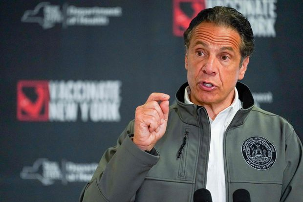 |